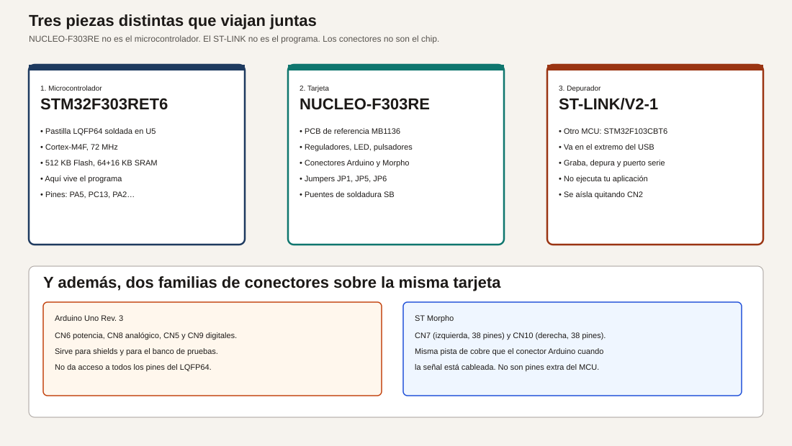
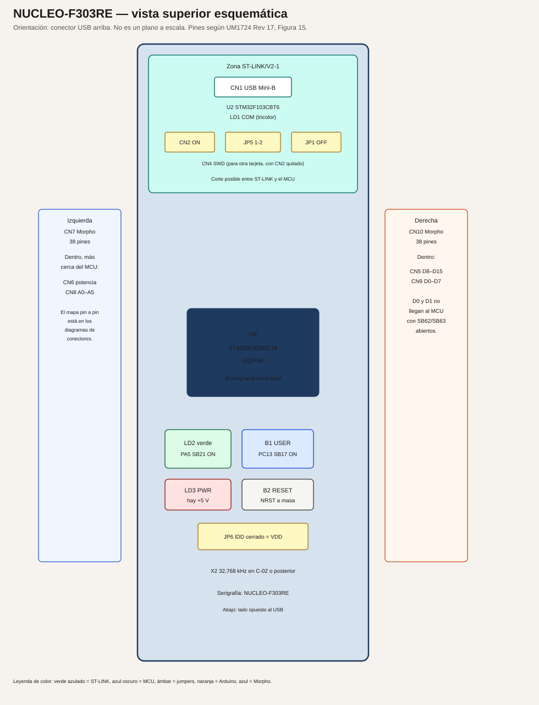
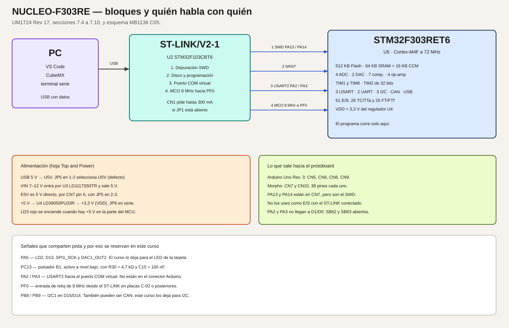
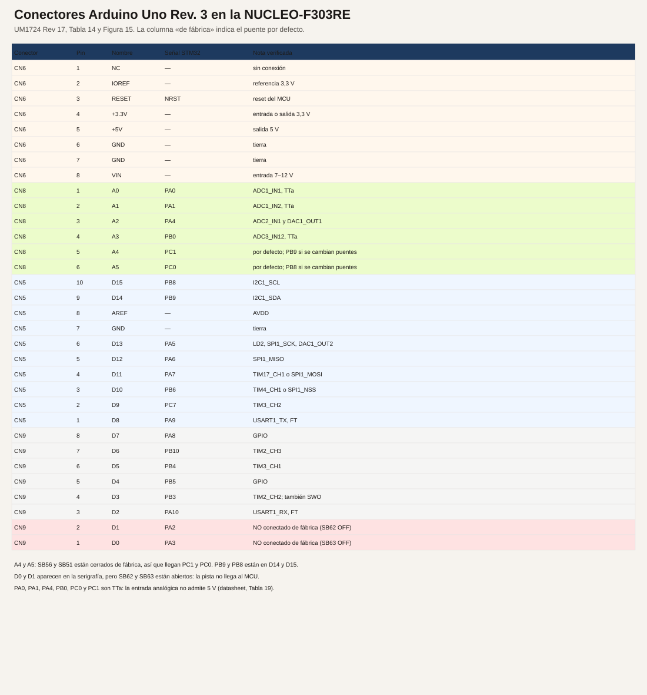
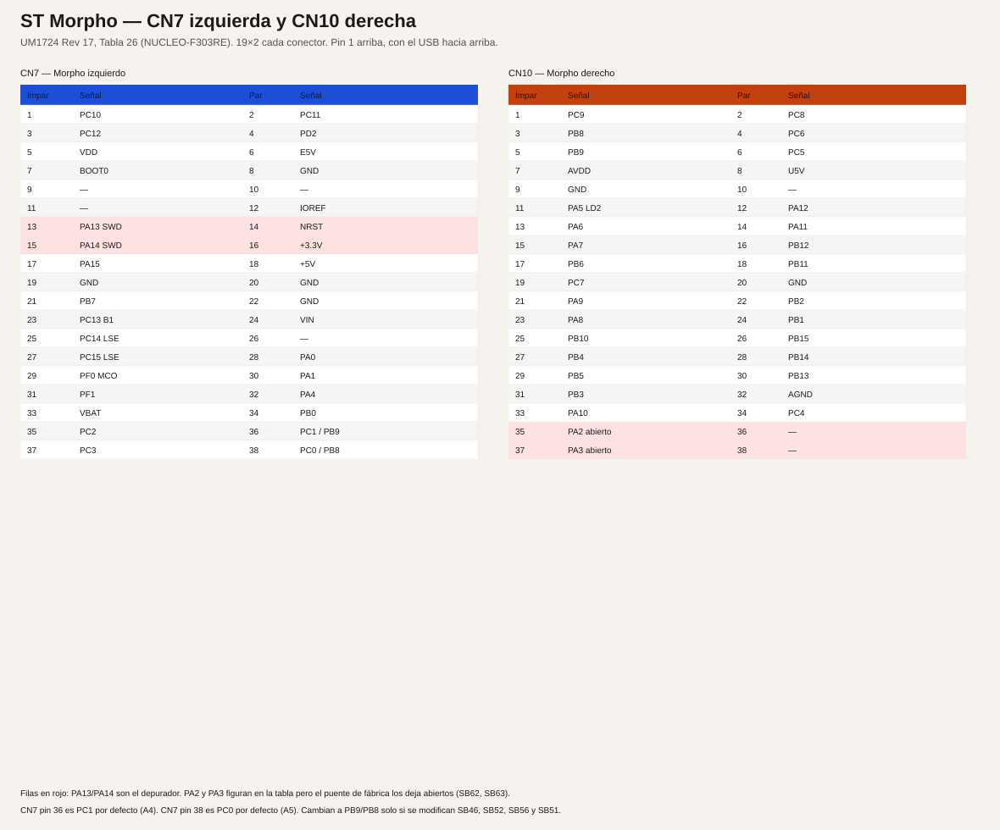
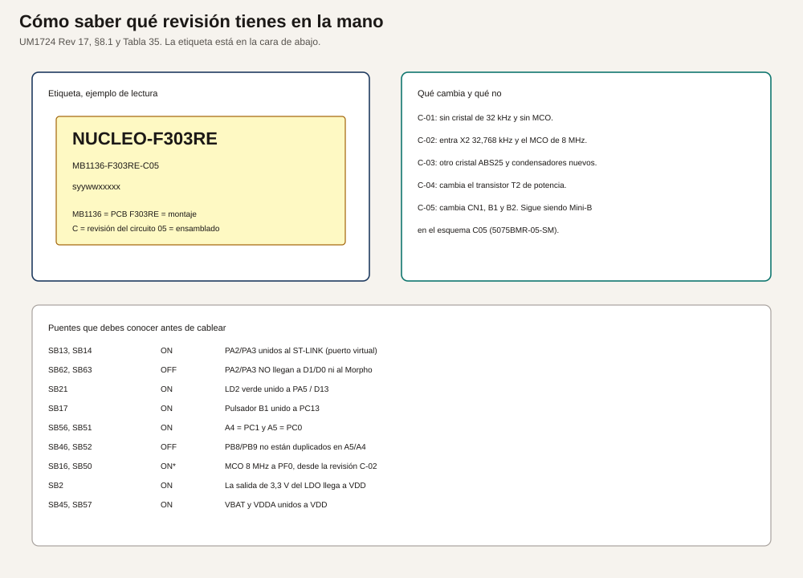
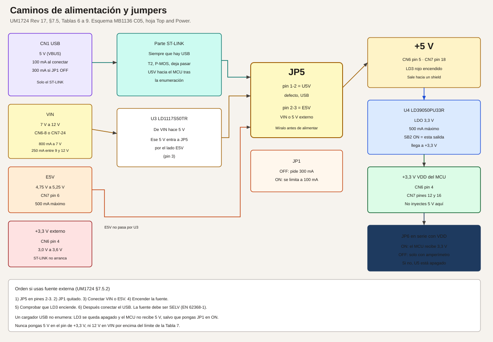

Fuentes oficiales y entorno de trabajo
Esta página fija las fuentes con las que se escribió la primera entrega y el procedimiento de instalación vigente para programar la NUCLEO-F303RE desde Visual Studio Code. El procedimiento se contrastó con la documentación publicada por STMicroelectronics. No se instaló el entorno en este equipo ni se grabó una placa: los pasos describen lo que dice el manual, no un resultado medido aquí.
Cómo leer las marcas de este curso
Cada afirmación técnica lleva una de estas marcas.
- Verificado. Sale de un manual, un datasheet, una errata o un esquema, con sección o tabla.
- Convención de este curso. Es una decisión pedagógica para no pisar el mismo pin en módulos distintos. No es una obligación del fabricante.
- Esperado. Es lo que el diseño debe hacer. No es una medida tomada con polímetro sobre una placa concreta.
- No comprobado en hardware. Este texto no afirma que el programa se compiló, se simuló o se ejecutó en una tarjeta.
Las cinco piezas que no hay que mezclar
Antes de instalar nada conviene separar cinco nombres que en la caja parecen uno solo.
| Pieza |
Qué es |
Qué no es |
| STM32F303RET6 |
El microcontrolador, en cápsula LQFP64, referencia U5 en el esquema |
La tarjeta entera |
| NUCLEO-F303RE |
La tarjeta de evaluación, PCB MB1136 |
El chip, ni el programa |
| ST-LINK/V2-1 |
El depurador integrado, con su propio microcontrolador STM32F103CBT6 |
La aplicación que vas a escribir |
| Conectores Arduino Uno Rev. 3 |
CN5, CN6, CN8 y CN9 |
Todos los pines del chip |
| Conectores ST Morpho |
CN7 y CN10, 38 pines cada uno |
Pines nuevos: son las mismas pistas, con más señales |
Verificado. UM1724 Rev 17, tabla 1: el código de pedido NUCLEO-F303RE usa la placa MB1136 y el microcontrolador STM32F303RET6. La sección 7.11 nombra el ST-LINK como STM32F103CBT6. La sección 1 describe los conectores Arduino Uno V3 y los conectores ST morpho.
Documentación que se consultó
Las fechas son las que aparecen en la portada o en la página del documento consultado en octubre de 2026. ST puede publicar una revisión posterior. Si un número de esta entrega no coincide con el PDF que tienes abierto, manda el PDF.
| Documento |
Revisión consultada |
Para qué se usa |
Enlace |
| Página de producto NUCLEO-F303RE |
Consulta de octubre de 2026 |
Código de pedido, paquete de esquemas y archivos de fabricación |
st.com/en/evaluation-tools/nucleo-f303re |
| UM1724, STM32 Nucleo-64 boards (MB1136) |
Rev 17, septiembre de 2025 |
Alimentación, jumpers, puentes, conectores, revisiones de placa |
PDF UM1724 |
| Esquema MB1136-DEFAULT-C05 |
17 de agosto de 2022 |
Valores de R30, R31, C15, reguladores y referencia de CN1 |
PDF del esquema C05 |
| Datasheet STM32F303xD / STM32F303xE |
DocID026415 Rev 5, octubre de 2016 |
Memoria, periféricos del F303RE, límites eléctricos, tipo de cada pin |
PDF del datasheet |
| RM0316, manual de referencia |
El citado por el datasheet |
Registros y periféricos. Se abrirá en el módulo que los use |
Enlace desde la página del producto, documento RM0316 |
| ES0261, errata del silicio Rev Y |
Rev 5, diciembre de 2018 |
Limitaciones del STM32F303RET6 revisión Y |
PDF ES0261 |
| UM3512, instalación de STM32CubeIDE for VS Code |
Rev 2, marzo de 2026 |
Requisitos e instalación de la extensión |
PDF UM3512 |
| Documentación en línea de STM32CubeIDE for Visual Studio Code |
Canal latest, consultado en octubre de 2026 |
Instalación, primer proyecto, CMake, depuración, preguntas frecuentes |
dev.st.com, STM32CubeIDE for VS Code |
| UM1718, STM32CubeMX |
La guía de usuario vigente en st.com; la interfaz descrita en la documentación en línea corresponde a la rama 6.18 |
Crear el proyecto y generar código con cadena CMake |
Página de STM32CubeMX |
El datasheet, en su introducción, remite al manual de referencia RM0316 y al manual de programación PM0214 para el núcleo Cortex-M4. Esos dos documentos se citan cuando un módulo entra en registros o en el juego de instrucciones. No hace falta leerlos para el módulo 1.
Qué se comprobó en el silicio y en la placa
Verificado en el datasheet, tabla 2, columna STM32F303Rx con 512 KB, que es el STM32F303RET6:
- Núcleo Arm Cortex-M4 con FPU, 72 MHz.
- 512 KB de Flash.
- 64 KB de SRAM en el bus de datos y 16 KB de CCM. El título del datasheet resume el conjunto como 80 KB de SRAM.
- 4 ADC de 12 bits y 22 canales en este encapsulado. El texto de descripción habla de 5 Msps.
- 2 canales de DAC de 12 bits.
- 7 comparadores y 4 amplificadores operacionales, según la descripción de la familia.
- Temporizadores: 2 avanzados de 16 bits (TIM1 y TIM8), 5 de propósito general de 16 bits, 1 de propósito general de 32 bits y 2 básicos de 16 bits.
- 3 I2C, 3 USART, 2 UART, 1 CAN 2.0B y 1 USB full-speed.
- Hasta 4 SPI en la familia. Cuáles salen al conector se fija en el mapa de pines del índice, con la tabla de funciones alternativas.
- 12 canales DMA.
- 26 entradas/salidas normales (TC y TTa) y 25 tolerantes a 5 V (FT y FTf). En total, 51 en LQFP64.
- Tensión de trabajo de VDD: 2,0 V a 3,6 V. En esta tarjeta el regulador la deja en 3,3 V.
Verificado en UM1724 sobre la tarjeta, y desarrollado en el módulo 1:
- ST-LINK/V2-1 integrado, con puerto COM virtual, almacenamiento masivo y depuración SWD.
- LED de usuario LD2 en PA5 (D13) para esta referencia. El manual avisa de que otras Nucleo-64 usan PB13.
- Pulsador de usuario B1 en PC13. Pulsador de reset B2 en NRST.
- USART2 en PA2 y PA3 hacia el ST-LINK, con SB13 y SB14 cerrados y SB62 y SB63 abiertos.
- Desde la revisión de placa C-02, el reloj de 8 MHz llega desde el ST-LINK al pin PF0, y hay un cristal de 32,768 kHz.
La errata ES0261 aplica al silicio revisión Y. UM1724, tabla 34, identifica la NUCLEO-F303RE con STM32F303RET6 revisión Y y con esa errata. Cada módulo práctico mirará la sección de la errata del periférico que vaya a usar. No se copia aquí la lista completa para no tratar una limitación de silicio como si fuera un fallo de la práctica.
Entorno principal
El curso usa esta cadena, en este orden:
- Visual Studio Code.
- La extensión oficial STM32CubeIDE for Visual Studio Code, paquete de extensiones de ST, generación 3.x. En el Marketplace el identificador del paquete es
stmicroelectronics.stm32-vscode-extension.
- STM32CubeMX, aplicación de escritorio, para elegir la placa, configurar pines y generar el proyecto.
- CMake, descargado por el gestor de bundles de la extensión. No se instala aparte el antiguo STM32CubeCLT.
- La cadena GNU Arm Embedded que trae ese gestor.
- El ST-LINK/V2-1 ya soldado en la tarjeta, para grabar y depurar.
Verificado. La nota de versión de la extensión 3.x dice que la arquitectura nueva sustituye el paquete único STM32CubeCLT por un gestor de bundles y por CMSIS-PACK de la familia. También dice que la depuración usa un adaptador propio de ST, compatible con ST-LINK y con J-Link. La guía del primer proyecto indica generar en CubeMX con la cadena CMake y abrir esa carpeta en VS Code.
No uses como camino principal el IDE basado en Eclipse (STM32CubeIDE de escritorio). El manual de la placa todavía lo nombra entre las cadenas admitidas por el fabricante. Aquí queda como alternativa, no como el procedimiento del curso.
La extensión 2.x pedía STM32CubeCLT y, con frecuencia, la extensión Cortex-Debug de terceros. Esas instrucciones no sirven para la 3.x. Si ya tenías la 2.x, desinstálala antes de instalar la 3.x. Así lo recomienda la página de migración.
Sistema operativo
Verificado en la página System requirements de la documentación en línea:
| Sistema |
Versiones indicadas |
| Windows 10 y Windows 11 |
64 bits. Es la plataforma principal de este curso |
| Ubuntu 22.04, 24.04 y 26.04 |
64 bits |
| Fedora 43 y 44 |
64 bits |
| macOS 15 y macOS 26 |
Intel y Apple silicon |
El mismo documento pide un procesador de 1,6 GHz o más, 4 GB de RAM, 10 GB libres y una pantalla de al menos 1024×768.
La extensión necesita salida a Internet la primera vez, hacia estos servidores de ST:
https://developer.st.com/bundles, para las herramientas de línea de comandos.https://developer.st.com/st-pack-server/, para la descripción de los productos.
Si la red de tu empresa intercepta HTTPS, la documentación remite a un artículo de la comunidad sobre proxy y certificados. Sin esos dos servidores el primer proyecto no se puede crear: la propia lista de problemas conocidos dice que un proyecto vacío creado sin red queda defectuoso.
Instalación en Windows
Haz los pasos en este orden. Un paso saltado suele aparecer después como «la placa no sale».
1. Visual Studio Code
- Descarga el instalador de code.visualstudio.com.
- Instálalo para tu usuario.
- Ábrelo una vez para que cree el perfil.
UM3512 recomienda un perfil de VS Code dedicado a STM32, porque otras extensiones de C y de C++ pueden chocar con las de ST. En la práctica: File, Preferences, Profiles, crea uno llamado STM32 y trabaja dentro de ese perfil.
2. Extensión de ST
- En la barra lateral, abre Extensions.
- Busca
STM32.
- Instala STM32CubeIDE for Visual Studio Code, publicada por STMicroelectronics.
- Espera a que termine el paquete. La 3.x no es una sola extensión: arrastra varias.
Si migras desde la 2.x, desinstala antes la anterior. La pregunta frecuente de ST lo repite: no instales la nueva encima sin quitar la vieja.
La primera apertura descarga bundles. Hace falta red y puede tardar varios minutos. En la barra de actividad aparece el icono de STM32. Ahí está el gestor de bundles. Déjalo terminar hasta que las filas de compilación y depuración queden al día.
3. Controlador de ST-LINK
Verificado. La página de instalación dice que, en la versión actual, el usuario instala a mano el controlador de la sonda porque hace falta privilegio de administrador.
- Abre el icono de STM32CubeIDE for VS Code.
- En STM32Cube Resources, elige ST-Link USB Drivers.
- Acepta el instalador de Windows.
La lista de problemas conocidos describe el síntoma si te saltas este paso en un Windows 11 nuevo: la vista STM32Cube Devices and Boards no muestra ninguna placa, y la utilidad de actualización del ST-LINK tampoco la ve.
Linux y macOS no usan ese instalador de Windows. En Ubuntu, si la sesión de depuración se queja de libncurses5, la página de problemas conocidos trae el paquete concreto para 22.04, 24.04 y Fedora. En Ubuntu no instales VS Code desde Snap si vas a usar esta extensión: el mismo documento dice que CMake no descubre el proyecto en esa instalación. Usa el paquete .deb o apt.
4. STM32CubeMX
- Desde la página de STM32CubeMX en st.com, descarga el instalador de Windows.
- Instálalo. En el primer arranque inicia sesión con una cuenta de ST, o usa el modo que ofrezca el instalador de tu versión, y deja que actualice la base de microcontroladores.
- Cuando el curso pida un paquete de firmware, CubeMX descarga STM32CubeF3. Acepta esa descarga. No copies a mano un árbol de firmware de un tutorial antiguo.
La generación hacia VS Code se hace eligiendo la cadena CMake en la pantalla de Project Manager. Esa opción es la que describe la guía Import STM32CubeMX project de la extensión 3.x.
5. Cable y primera detección
Verificado en el esquema C05. El conector CN1 está especificado como Neltron 5075BMR-05-SM, un zócalo Mini-USB tipo B de cinco contactos. Hace falta un cable Mini-USB con líneas de datos. Un cable que solo lleva los dos hilos de carga enciende luces y no aparece en el PC.
UM1724, tabla 35, dice que la revisión de placa C-05 cambió el conector CN1. El esquema C05 consultado sigue siendo Mini-B. Si tu etiqueta no dice C05, mira la forma del conector antes de comprar el cable. La sección 3.1 del manual advierte de que el cable depende de la referencia de la placa.
- Deja los dos puentes de CN2 puestos. Así el ST-LINK apunta al STM32 de la propia tarjeta.
- Deja JP5 entre los pines 1 y 2. Esa es la posición de fábrica para alimentar desde el USB.
- Deja JP6 puesto. Si está quitado y no hay un amperímetro, el microcontrolador no recibe alimentación.
- Enchufa el Mini-USB al CN1 y el otro extremo al PC.
- En VS Code, abre la vista de dispositivos y placas de la extensión.
Esperado, según UM1724 §7.6. LD1, el LED tricolor del ST-LINK, pasa por rojo intermitente, se queda rojo al enumerar y pasa a verde cuando la comunicación con el STM32 de destino queda lista. LD3, el LED rojo de potencia, se enciende cuando la parte del microcontrolador tiene 5 V. Si LD3 no enciende, el PC no concedió los 300 mA que la placa pide con JP1 abierto, o JP5 no está en U5V. El módulo 1 practica esta observación.
Crear el proyecto de una práctica
Este es el camino que repetirás desde el módulo 3. El módulo 1 todavía no genera código.
En STM32CubeMX
- File, New Project.
- Pestaña Board Selector. Busca
NUCLEO-F303RE.
- Start Project. Si CubeMX ofrece inicializar los periféricos con la configuración de la placa, acepta. Así PA5 queda como el LED de usuario y PC13 como el pulsador, que es lo que la placa trae cableado.
- En Project Manager:
- Nombre del proyecto, por ejemplo
m03-parpadeo.
- Ruta sin espacios raros, dentro de la carpeta de prácticas.
- Toolchain / IDE: CMake.
- Generate Code.
CubeMX crea, entre otros, el archivo .ioc, CMakeLists.txt, CMakePresets.json y las carpetas Core/Inc y Core/Src. El archivo main.c tiene zonas delimitadas por comentarios USER CODE BEGIN y USER CODE END. Lo que escribas fuera de esas zonas se pierde la próxima vez que pulses Generate Code.
En Visual Studio Code
Según la guía Open in VS Code de la extensión:
- File, Open Folder, y elige la carpeta del proyecto. No abras solo
main.c.
- Cuando VS Code pregunte el configure preset, elige Debug.
- En el panel de la extensión, pulsa Discover STM32Cube project.
- En el cuadro de configuración elige la placa NUCLEO-F303RE, la cadena GNU Arm y el proyecto principal. Save and close.
- CMake configura y crea
build/Debug.
El preset Debug es el que usarás mientras aprendes, porque conserva información para el depurador. El preset Release existe para optimizar. No lo uses para seguir un fallo línea a línea.
Compilar
En la vista de CMake, pulsa el botón de construcción del objetivo activo. También vale el atajo de construcción de VS Code cuando la extensión ha registrado la tarea.
Esperado. La salida termina sin la palabra error y aparece un archivo .elf dentro de la carpeta de construcción. La página de depuración dice que, si VS Code no sabe qué depurar, casi siempre falta ese .elf porque la compilación no llegó a buen puerto.
Errores de compilación frecuentes, tomados de la página Build de la extensión:
- Un archivo de cabecera que no se encuentra: la configuración de CMake no se ejecutó, o se generó el código y no se volvió a descubrir el proyecto.
- Un símbolo sin definir: falta un fuente en la lista de CMake, normalmente porque se creó el archivo y no se regeneró.
- Memoria que no cabe: el mapa del enlazador se pasó de Flash o de RAM. En estas prácticas iniciales no debería ocurrir.
Cannot activate the STM32Cube Debug Core por una dependencia que no encuentra: cierra VS Code y ábrelo otra vez. Es un problema conocido de la extensión.
Grabar y depurar
- Abre Run and Debug con Ctrl+Shift+D.
- Pulsa el botón de depuración. Si pregunta la sonda, elige el ST-LINK de la tarjeta.
- Si el firmware del ST-LINK pide actualización, la vista de dispositivos tiene una acción para hacerlo. La página de depuración lo señala como el fallo más habitual del primer arranque.
- La extensión crea una configuración de tipo
stlinkgdbtarget. Si quieres conservarla, crea un launch.json desde el enlace create a launch.json file. El archivo tiene que estar en .vscode en la raíz del proyecto. La configuración generada al vuelo no se guarda al cerrar la sesión.
Con la ejecución parada en un punto de ruptura puedes leer la vista Variables, los registros del núcleo y la vista de periféricos. Poner un punto de ruptura es pulsar a la izquierda del número de línea.
La pregunta frecuente de ST distingue esto de la live watch de CubeIDE: ver y modificar variables mientras el programa sigue corriendo no estaba en la versión inicial de la extensión 3.x. Parar en un punto de ruptura y mirar la variable sí está documentado.
El servidor GDB no tiene control de acceso. La propia página de depuración advierte de no exponerlo a una red que no sea de confianza.
Puerto serie virtual
La pregunta frecuente confirma que la extensión trae un SERIAL MONITOR. Con la configuración de fábrica, ese puerto es el USART2 del STM32F303RET6 (PA2 transmisión, PA3 recepción) a través del ST-LINK.
En Windows aparece un puerto COM nuevo cuando la placa enumera. En el monitor eliges ese puerto, la velocidad que hayas configurado en CubeMX y 8 bits de datos, sin paridad y un bit de parada, salvo que el módulo diga otra cosa.
No hace falta un adaptador USB-serie externo para hablar con el PC mientras SB13 y SB14 sigan cerrados. Esos puentes son el camino de fábrica.
Errores frecuentes de puesta en marcha
| Lo que ves |
Causa documentada |
Qué hacer |
| No aparece ninguna placa |
Falta el controlador de ST-LINK en Windows, o el cable no tiene datos |
Instalar el controlador desde la extensión. Probar otro cable Mini-USB |
| LD3 apagado y el MCU no responde |
El PC no dio 300 mA, JP5 no está en 1-2, o JP6 está abierto |
Revisar los tres jumpers. UM1724 §7.5.1 y §7.8 |
| La placa se alimenta con un cargador de pared y LD3 sigue apagado |
No hay enumeración USB, así que no se cierra el camino de 5 V |
Poner JP1 en ON, como indica la nota de §7.5.1, o usar un puerto de un PC |
El depurador no encuentra el .elf |
La compilación no terminó |
Leer el registro de CMake y corregir antes de depurar |
| El ST-LINK pide actualizar el firmware |
La versión de la sonda es anterior a la que espera la herramienta |
Actualizar desde la vista de dispositivos |
| Proyecto vacío creado sin red |
Problema conocido: el proyecto queda mal generado |
Crearlo con acceso a los servidores de ST |
| VS Code instalado con Snap en Ubuntu |
Problema conocido: CMake no descubre el proyecto |
Instalar VS Code con .deb o apt |
| Choca una extensión de C/C++ de Microsoft |
La página de migración lo lista como conflicto posible |
Usar el perfil dedicado y no mezclar el paquete de C/C++ de Microsoft con el de ST |
Lo que este curso no va a hacer
- No va a tratar la NUCLEO-F303RE como si tuviera Wi-Fi, Ethernet o una borna de 24 V. No los tiene.
- No va a conectar 230 V, 24 V, 0–10 V ni 4–20 mA a un pin. Esas señales entran por una etapa externa, en el módulo 27.
- No va a presentar un prototipo de prácticas como un equipo listo para un cuadro industrial.
Siguiente página
El índice, el mapa de pines que usarán todos los módulos y la matriz de materiales están en Índice y matriz.
Índice, mapa de pines y matriz de materiales
Esta página es el contrato del curso. Los módulos que todavía no están escritos respetarán este mapa. Si una práctica futura necesita mover un pin, se actualizará aquí antes de publicar el módulo.
Nada de esta página se ha ejecutado en una tarjeta. Las columnas de pin salen de UM1724 Rev 17 y del datasheet DocID026415 Rev 5. La columna «por qué este pin» es una convención de este curso.
Cómo está organizado
| Nivel |
Módulos |
Qué se espera al terminarlo |
| Básico |
1 a 7 |
Encender, leer un pulsador y hablar por el puerto serie sin dañar la placa |
| Intermedio |
8 a 16 |
Tiempo, interrupciones, PWM, analógico, buses e encoder |
| Avanzado |
17 a 28 |
Programa partido en estados, FreeRTOS, control, buses de campo y un prototipo documentado |
| Integradores |
P1 a P4 |
Cuatro montajes que reutilizan los módulos, sin pins nuevos en conflicto |
Cada módulo, cuando se publique, traerá objetivos, prerrequisitos, teoría en dos niveles, prácticas, resumen, glosario, preguntas con respuesta explicada, ejercicios y una lista de comprobación.
Los módulos prácticos traen al menos tres ejemplos de dificultad creciente. Los conceptuales traen ejercicios guiados sobre la placa. El formato de cada ejemplo con hardware es el de quince puntos pedido para el curso: problema, objetivo, materiales, explicación, dibujo, tabla de cableado, cálculos, CubeMX, código completo, sitio del código, prueba en VS Code, resultado esperado, diagnóstico, variaciones y criterios de aceptación.
Cada módulo tiene ahora una ficha con el problema que resuelve, lo que se sabe al terminar, las tres prácticas, los pines y el límite que no se cruza. Las fichas están en Fichas de los módulos. El texto completo, con procedimientos, está escrito para el módulo 1 y para el módulo 2. Del 3 al 28 la ficha fija el contenido; el desarrollo línea a línea llega en la entrega de ese módulo.
Índice
Nivel básico
| Módulo |
Título |
Estado de esta entrega |
| 1 |
Arquitectura de la tarjeta y función de cada parte |
Escrito |
| 2 |
Alimentación, niveles de tensión y límites eléctricos |
Escrito |
| 3 |
Instalación y primer proyecto |
Planificado |
| 4 |
Fundamentos de C aplicados a STM32 |
Planificado |
| 5 |
GPIO: salidas, entradas, pull-up, pull-down y antirrebote |
Planificado |
| 6 |
Depuración y diagnóstico |
Planificado |
| 7 |
UART y terminal serie |
Planificado |
Nivel intermedio
| Módulo |
Título |
Estado |
| 8 |
Temporizadores, medida de tiempo y programas que no se quedan bloqueados |
Planificado |
| 9 |
Interrupciones y prioridades |
Planificado |
| 10 |
PWM y mando de cargas con una etapa externa |
Planificado |
| 11 |
ADC: lectura, resolución, muestreo y calibración |
Planificado |
| 12 |
DAC. Está en el chip y sale a un conector |
Planificado |
| 13 |
I2C, sensores y una pantalla compatible |
Planificado |
| 14 |
SPI y un dispositivo externo |
Planificado |
| 15 |
DMA y adquisición que no ocupa al núcleo a cada muestra |
Planificado |
| 16 |
Encoder, cuenta de pulsos y velocidad |
Planificado |
Nivel avanzado
| Módulo |
Título |
Estado |
| 17 |
Máquinas de estados y programa partido en módulos |
Planificado |
| 18 |
FreeRTOS: tareas, colas, semáforos y sincronización |
Planificado |
| 19 |
Filtrado digital |
Planificado |
| 20 |
PID sobre una planta de baja tensión o un modelo en el propio programa |
Planificado |
| 21 |
Modbus RTU con un transceptor RS-485 externo |
Planificado |
| 22 |
CAN con transceptor externo y una segunda estación |
Planificado |
| 23 |
Watchdog, fallos y recuperación |
Planificado |
| 24 |
Memoria no volátil y parámetros que sobreviven al apagado |
Planificado |
| 25 |
Bajo consumo |
Planificado |
| 26 |
HAL, LL y registros: cuándo vale cada uno |
Planificado |
| 27 |
Interfaces para señales industriales |
Planificado |
| 28 |
Pruebas, documentación y preparación de un prototipo |
Planificado |
Proyectos integradores
| Proyecto |
Título |
Se apoya en |
| P1 |
Estación de temperatura: lectura, pantalla y alarma |
11, 13, 5, 17 |
| P2 |
Tanque: nivel simulado, estados de bomba y fallos |
11, 17, 20, 23 |
| P3 |
Monitor de motor: RPM, una señal analógica y alarmas |
16, 11, 7 |
| P4 |
Nodo de adquisición: medidas, parámetros y Modbus RTU |
15, 21, 24 |
Periféricos que sí están, y dónde se usan
Verificado en el datasheet de la familia STM32F303xD/E, tabla 2, columna del encapsulado de 64 pines con 512 KB de Flash.
| Periférico |
¿Está en el STM32F303RET6? |
¿Sale en esta tarjeta sin soldar puentes? |
Módulo |
| GPIO |
Sí, 51 líneas |
La mayoría, por Arduino o por Morpho. PA2, PA3, PA13 y PA14 tienen dueño |
5 |
| Temporizadores TIM1, TIM8, TIM2, TIM3, TIM4, TIM15, TIM16, TIM17 y dos básicos |
Sí |
Varios canales llegan a CN5 y CN9 |
8, 10, 16 |
| Interrupciones del núcleo |
Sí |
No es un conector |
9 |
| ADC, cuatro unidades, 22 canales en LQFP64 |
Sí |
A0 a A5, y más canales por Morpho |
11, 15 |
| DAC, dos canales |
Sí. PA4 es DAC1_OUT1 y PA5 es DAC1_OUT2 |
PA4 está en A2. PA5 está ocupado por LD2 |
12 |
| Comparadores y operacionales |
Sí, 7 y 4 |
Varios pines analógicos los comparten. Se usarán solo si el módulo lo necesita y el pin sigue libre |
11, 27 |
| I2C1 en PB8 y PB9 |
Sí |
D15 y D14, siempre |
13 |
| SPI2 en PB13, PB14, PB15 y PB12 |
Sí, función alternativa AF5 del datasheet, tabla 14 |
Morpho CN10, pines 30, 28, 26 y 16 |
14 |
| DMA, 12 canales |
Sí |
No es un conector |
15 |
| USART2 hacia el PC |
Sí |
Por el USB del ST-LINK, no por D0/D1 |
7 |
| USART1 en PA9 y PA10 |
Sí |
D8 y D2 |
7, enlace con ESP32 |
| CAN en PA11 y PA12 |
Sí, funciones alternativas del datasheet |
Morpho CN10 pines 14 (PA11) y 12 (PA12). Hace falta transceptor |
22 |
| USB full-speed del propio STM32 |
Sí, en PA11 y PA12 |
No hay conector USB de dispositivo en la zona del MCU. Choca con el CAN de este curso, así que no hay módulo de USB de dispositivo |
— |
| FSMC |
No en el STM32F303Rx |
No aplica |
— |
| Wi-Fi, Ethernet, RS-485, CAN físico |
No están en la tarjeta |
Hace falta un módulo externo |
21, 22, 27 |
PB8 y PB9 también pueden ser CAN_RX y CAN_TX. Este curso no los usa para CAN, porque ya son el I2C de los módulos de pantalla. El CAN va por PA11 y PA12.
Mapa de pines que el curso se compromete a respetar
La posición de fábrica de los puentes es la de UM1724, tabla 10: el estado por defecto es el que el manual marca, y las prácticas no piden soldar nada en los módulos básicos.
| Señal |
Conector y pin |
Uso en el curso |
No usar a la vez para |
| PA5 |
CN5 pin 6, D13. También CN10 pin 11 |
LED verde LD2. PWM de brillo del propio LED |
SPI1_SCK, DAC1_OUT2 |
| PC13 |
CN7 pin 23. Pulsador B1, SB17 cerrado |
Entrada de usuario, activa a nivel bajo |
Una salida. El datasheet prohíbe usarlo como fuente de corriente |
| PA2 |
No está en D1 mientras SB62 esté abierto |
USART2_TX hacia el ST-LINK |
Un sensor en D1 |
| PA3 |
No está en D0 mientras SB63 esté abierto |
USART2_RX desde el ST-LINK |
Un sensor en D0 |
| PA9 |
CN5 pin 1, D8. También CN10 pin 21 |
USART1_TX hacia un ESP32 u otro 3,3 V |
— |
| PA10 |
CN9 pin 3, D2. También CN10 pin 33 |
USART1_RX |
— |
| PA0 |
CN8 pin 1, A0. Tipo TTa |
Potenciómetro y señales de 0 a 3,3 V |
5 V |
| PA1 |
CN8 pin 2, A1. Tipo TTa |
Segunda entrada analógica, nivel simulado |
5 V |
| PA4 |
CN8 pin 3, A2. Tipo TTa |
DAC1_OUT1 cuando haya módulo de DAC. Hasta entonces, entrada analógica |
DAC y ADC a la vez |
| PB0 |
CN8 pin 4, A3. Tipo TTa |
Entrada analógica de reserva |
5 V |
| PC1 |
CN8 pin 5, A4, con SB56 cerrado |
Entrada analógica |
I2C. PB9 no está aquí de fábrica |
| PC0 |
CN8 pin 6, A5, con SB51 cerrado |
Entrada analógica |
I2C. PB8 no está aquí de fábrica |
| PB8 |
CN5 pin 10, D15. También CN10 pin 3 |
I2C1_SCL |
CAN en este mismo pin |
| PB9 |
CN5 pin 9, D14. También CN10 pin 5 |
I2C1_SDA |
CAN en este mismo pin |
| PB6 |
CN5 pin 3, D10 |
Chip select de SPI2 si hace falta un NSS por software, o GPIO |
No es el SCK |
| PC7 |
CN5 pin 2, D9 |
TIM3_CH2, PWM de un LED externo |
— |
| PB4 |
CN9 pin 6, D5 |
TIM3_CH1, PWM de reserva. También es SWO si se depura por traza |
Traza SWO y PWM a la vez |
| PB10 |
CN9 pin 7, D6 |
TIM2_CH3, servo educativo |
— |
| PB3 |
CN9 pin 4, D3 |
Libre como GPIO. Es el SWO del conector CN4 |
No cortar SB15 sin motivo |
| PA8 |
CN9 pin 8, D7 |
GPIO de propósito general |
— |
| PB5 |
CN9 pin 5, D4 |
GPIO de propósito general |
— |
| PB13 |
CN10 pin 30 |
SPI2_SCK |
— |
| PB14 |
CN10 pin 28 |
SPI2_MISO |
— |
| PB15 |
CN10 pin 26 |
SPI2_MOSI |
— |
| PB12 |
CN10 pin 16 |
SPI2_NSS |
— |
| PA11 |
CN10 pin 14 |
CAN_RX, con transceptor |
USB_DM |
| PA12 |
CN10 pin 12 |
CAN_TX, con transceptor |
USB_DP |
| PA13 |
CN7 pin 13 |
SWDIO. No usarlo como GPIO |
Cualquier otra función con el ST-LINK puesto |
| PA14 |
CN7 pin 15 |
SWCLK. No usarlo como GPIO |
Cualquier otra función con el ST-LINK puesto |
| PF0 |
CN7 pin 29 |
Reloj de 8 MHz desde el ST-LINK en C-02 o posterior |
GPIO |
| PC14, PC15 |
CN7 pines 25 y 27 |
Cristal de 32,768 kHz en C-02 o posterior |
GPIO |
PA0, PA1, PA2, PA3, PA4, PA5, PA6, PA7, PB0, PC0, PC1, PC2, PC3 y PC4 son TTa en la tabla 13 del datasheet: su tensión de entrada llega como máximo a VDDA + 0,3 V. No son tolerantes a 5 V. PA9 y PA10 son FTf: el datasheet, tabla 19, permite en un pin FT o FTf hasta 5,5 V como máximo absoluto. Eso no convierte la salida en 5 V. La salida sigue siendo 3,3 V.
PC13, PC14 y PC15 se alimentan a través de un interruptor que solo absorbe 3 mA. La nota 2 de la tabla de pines del datasheet dice que no deben usarse como fuente de corriente, por ejemplo para encender un LED, y que en salida no deben superar 2 MHz con 30 pF. En el encapsulado de 64 pines, la nota 4 de esa misma tabla dice que VREF+ no sale a un pin: queda unido por dentro a VDDA. En la placa, AREF es esa red AVDD.
Matriz de prácticas y materiales
La columna de materiales es lo que hay que tener encima de la mesa cuando se publique el módulo. Los valores eléctricos son requisitos, no una marca. Donde el cálculo del resistor dependa del LED que compres, el módulo lo hará con la hoja de ese LED. Aquí solo se anticipa el rango.
Hasta el módulo 10 todo es baja tensión, alimentado por el USB de la placa o por una pila o fuente de laboratorio de 5 V aislada de la red. Ningún módulo pide conectar la red eléctrica a la tarjeta.
| Módulo |
Prácticas previstas |
Material nuevo respecto al anterior |
| 1 |
Tres recorridos guiados: identificar piezas, leer la etiqueta, observar LEDs y medir 5 V y 3,3 V |
Placa, cable Mini-USB de datos, polímetro |
| 2 |
Tres ejercicios de límites: qué pin admite 5 V, cuánta corriente puede salir de un pin, qué pasa si JP5 está al revés |
El mismo polímetro. Fuente de laboratorio solo si se practica VIN, y debe ser SELV |
| 3 |
Tres proyectos mínimos: vacío que compila, LED que parpadea, punto de ruptura en el retardo |
PC con el entorno de la página de fuentes |
| 4 |
Tres ejercicios de C: tipos y tamaños, un bucle, una función que lee una variable global |
Ninguno de hardware |
| 5 |
LED de la placa, LED externo, pulsador de la placa, pulsador externo con antirrebote |
Protoboard, cables, LED rojo de indicador, resistencias, pulsador, 4,7 kΩ, 100 nF |
| 6 |
Parar en un bucle, mirar una variable, ver el registro del GPIO, provocar un fallo y leer el analizador |
Ninguno nuevo |
| 7 |
Eco por el puerto virtual, tramas con un formato fijo, enlace con un ESP32 a 3,3 V por USART1 |
ESP32 u otra placa de 3,3 V. Tierra común. Sin desplazador de nivel si ambos lados son 3,3 V |
| 8 |
Parpadeo sin bloquear, semáforo, medida del tiempo entre dos flancos |
LED externo ya pedido. Tres LED si se monta el semáforo: rojo, ámbar y verde, cada uno con su resistor |
| 9 |
Pulsador por interrupción, prioridad frente a USART, antirrebote en la interrupción |
El pulsador del módulo 5 |
| 10 |
Brillo del LED por PWM, transistor para una carga que el pin no puede alimentar, servo educativo |
LED, resistor calculado, transistor NPN de pequeña señal (2N2222 o equivalente), diodo, servo de hobby tipo SG90 alimentado a 5 V desde una fuente externa, no desde un GPIO |
| 11 |
Potenciómetro, una tensión dentro de 0 a 3,3 V, temperatura con un sensor analógico de 3,3 V |
Potenciómetro lineal de 10 kΩ, sensor analógico cuya salida quepa en 0 a 3,3 V (se fijará el modelo con su hoja al escribir el módulo) |
| 12 |
Tensión continua en PA4, rampa, tono o referencia para un comparador |
Polímetro. Opcional: osciloscopio |
| 13 |
Barrido del bus, sensor I2C de 3,3 V, pantalla OLED I2C de 3,3 V |
Módulo I2C alimentado a 3,3 V. Pull-up de 4,7 kΩ a 3,3 V si el módulo no los trae |
| 14 |
Leer un registro SPI, un sensor SPI de 3,3 V, una cadena de LEDs con un registro de desplazamiento 74HC595 alimentado a 3,3 V |
Dispositivo SPI de 3,3 V. Cables cortos |
| 15 |
ADC por encuesta, ADC por DMA, un búfer que se vuelca por el puerto serie |
El potenciómetro del módulo 11 |
| 16 |
Contar pulsos, RPM con una rueda de prueba, encoder incremental de 3,3 V |
Encoder o dos salidas en cuadratura compatibles con 3,3 V. Resistencia de pull-up si la salida es en colector abierto |
| 17 |
Semáforo como máquina de estados, alarma con estados, el mismo programa partido en archivos |
Ninguno nuevo |
| 18 |
Dos tareas, una cola entre la tecla y el LED, un semáforo para el puerto serie |
Ninguno nuevo |
| 19 |
Media móvil, un filtro IIR pequeño, comparar la señal cruda y la filtrada |
El potenciómetro |
| 20 |
PID sobre un modelo en el programa, PID sobre un LED y un fotorresistor como planta de juguete, discusión de qué no es un lazo industrial |
Fotorresistor y LED, o solo el modelo en código |
| 21 |
Trama Modbus de prueba, esclavo que publica un registro, segunda estación (otro USB-RS485 o una segunda placa) |
Transceptor RS-485 de alimentación y niveles de 3,3 V, por ejemplo un MAX3485 o equivalente. Par trenzado. Resistencia de terminación 120 Ω. No un MAX485 alimentado a 5 V pegado al pin |
| 22 |
Dos nodos CAN a 3,3 V en el lado lógico, un identificador, un filtro |
Dos transceptores CAN con E/S de 3,3 V (familia TJA1051T/3 o equivalente) y dos placas, o una placa y un adaptador CAN-USB compatible |
| 23 |
Watchdog de ventana, un bucle que se cuelga, recuperación con un código de fallo |
Ninguno nuevo |
| 24 |
Guardar un umbral en Flash, leerlo al arrancar, proteger la escritura ante un apagón |
Ninguno nuevo |
| 25 |
Medir corriente en JP6, un modo Sleep, qué periférico impide bajar el consumo |
Polímetro en modo corriente, en serie con JP6, como describe UM1724 §7.8 |
| 26 |
La misma salida de LED con HAL, con LL y con el registro, y cuándo no compensa bajar de nivel |
Ninguno nuevo |
| 27 |
Entrada 24 V con optoacoplador, 0–10 V con divisor y protección, 4–20 mA con resistencia y amplificador o con un módulo ya aislado |
Módulos o componentes calculados en ese módulo. Alimentación de 24 V solo en el lado aislado, nunca en un header de la Nucleo |
| 28 |
Lista de pruebas del prototipo, un informe, qué falta para que deje de ser un montaje de prácticas |
Carpeta del proyecto |
El servo del módulo 10 es un servo de aeromodelismo o de robótica educativa. Se manda con un pulso de aproximadamente 1 ms a 2 ms repetido cada 20 ms, y la alimentación del motor es de unos 5 V por un cable distinto del pin de señal. No es un servomotor industrial con encoder, driver y red de 230 V o de 24 V. El curso no alimenta el motor del servo desde el pin del microcontrolador ni desde el 3,3 V de la placa.
El relé, cuando aparezca en el módulo 10 y en los proyectos, se activa con transistor o con un módulo que ya traiga transistor y diodo. La bobina no se conecta a un GPIO. La corriente de un pin, en valor absoluto máximo, es 25 mA, y la suma de todos los pines es 80 mA (datasheet, tabla 17). Esos números son máximos absolutos, no la corriente a la que conviene trabajar.
Material común para comprar una sola vez
- Una NUCLEO-F303RE. Anota la línea
MB1136-F303RE-Cxx de la etiqueta de abajo.
- Un cable USB tipo A o tipo C, del lado del PC, a Mini-USB tipo B, con hilos de datos.
- Protoboard de 830 puntos y un juego de cables macho-macho y macho-hembra.
- Polímetro que mida tensión continua y corriente continua en miliamperios.
- Resistencias de 220 Ω, 330 Ω, 510 Ω, 1 kΩ, 4,7 kΩ y 10 kΩ, 1/4 W.
- Condensadores cerámicos de 100 nF.
- LED indicadores de 3 mm o 5 mm, rojo, ámbar y verde. Guarda su hoja para calcular el resistor. No reutilices el valor 510 Ω de la placa sin calcular: ese valor es el de R31 en el esquema de la tarjeta, no una ley general.
- Pulsadores para protoboard.
- Transistor NPN de pequeña señal y diodo 1N4007, o un módulo de relé pensado para entrada de 3,3 V.
- Destornillador pequeño, para no apoyarte en los pulsadores cuando pongas un shield. El manual avisa de que la caperuza de B1 o B2 puede dejar el reset pulsado.
Lo que no está en la primera entrega
Están escritos el entorno, este índice, las fichas de los 28 módulos y los módulos 1 y 2. Del módulo 3 en adelante la ficha ya dice qué se practica y con qué pines; el procedimiento, el código y el dibujo de cada ejemplo se publican con ese módulo.
Cuando se publique un módulo, su carpeta de proyecto vivirá en proyectos/ y el HTML se regenerará con tools/build_html.py.
Fichas de los módulos
Esta página dice, módulo por módulo, qué problema se resuelve, qué se sabe al terminar, cuáles son las tres prácticas y qué pin se usa. No sustituye la lección. La lección escrita, con el procedimiento reproducible, está en el módulo 1 y en el módulo 2. Del 3 al 28 la ficha es el contrato: el código y el dibujo de cableado llegan con la entrega de ese módulo.
Nada de lo planificado se ha compilado ni se ha probado en una placa. Donde un número eléctrico importa, la ficha remite al datasheet o a UM1724.
El mapa de pines común está en el índice. Estas fichas no lo cambian.
Nivel básico
Módulo 1. Arquitectura de la tarjeta
Estado. Escrito en Módulo 1.
Para qué sirve. Poder señalar el chip, el ST-LINK, el LED, el pulsador y los conectores sin mezclarlos, y alimentar la placa por USB sin poner 5 V en el pin de 3,3 V.
Al terminar. Lees la etiqueta MB1136-F303RE-Cxx, reconoces LD1, LD2 y LD3, y sabes que D0 y D1 no llevan PA2 y PA3 de fábrica.
Prácticas. Identificar las piezas. Copiar la revisión. Medir +5 V en CN6 pin 5 y +3,3 V en CN6 pin 4.
Pines. Solo se observan. PA5 es el LED verde, PC13 el pulsador azul, PA13 y PA14 el depurador.
Módulo 2. Alimentación y límites eléctricos
Estado. Escrito en Módulo 2.
Para qué sirve. Decidir si un cable se puede conectar, antes de que haya un programa. La placa trabaja con 5 V en un raíl y con 3,3 V en el chip. No es lo mismo.
Al terminar. Distingues un máximo absoluto de una corriente de trabajo, clasificas un pin como TC, TTa o FT, y calculas la resistencia de un LED con la hoja de ese LED.
Prácticas. Clasificar cinco conexiones propuestas y rechazar las que salen del rango. Calcular un resistor de LED con un Vf declarado. Repartir el presupuesto de 300 mA del USB y el de 80 mA de la suma de pines.
Pines. No se añade ninguno. Se usan las medidas de CN6 pin 4 y pin 5 hechas en el módulo 1.
Límite. Un pin TTa, como PA0, no admite 5 V. Un pin FT admite hasta 5,5 V en la entrada y sigue saliendo a 3,3 V. PC13 no alimenta un LED.
Módulo 3. Instalación y primer proyecto
Estado. Planificado. El procedimiento de instalación ya está en Fuentes y entorno. Este módulo lo recorre con la placa delante y deja el primer programa mínimo.
Para qué sirve. Pasar de «la placa enciende» a «yo he generado, compilado y grabado un proyecto».
Al terminar. Tienes un proyecto CMake abierto en VS Code, generado desde CubeMX para la placa NUCLEO-F303RE, y sabes parar la ejecución en main.
Prácticas.
- Proyecto vacío que solo compila y llega a
main. Sirve para separar un fallo de herramientas de un fallo de tu código.
- El LED verde cambia de estado cada medio segundo con
HAL_Delay. Es el primer lazo visible.
- Un punto de ruptura dentro de ese retardo, y la variable que cuenta los pasos se lee en la vista Variables con el programa parado.
Pines. PA5 como GPIO de salida, que es lo que CubeMX propone al elegir la placa. No se cablea nada fuera.
Qué no se afirma. Hasta que se redacte el módulo, este repositorio no incluye ese proyecto ni dice que haya compilado.
Módulo 4. Fundamentos de C aplicados a STM32
Estado. Planificado. No supone que ya sepas C.
Para qué sirve. Leer el main.c que genera CubeMX sin tratarlo como un conjuro. Un uint8_t, un while y una función son las herramientas de los módulos siguientes.
Al terminar. Sabes el tamaño de los enteros que usa el HAL, qué es una variable global frente a una local, y por qué un bucle while (1) es el programa que se queda corriendo.
Prácticas. Las tres son sobre el proyecto del módulo 3, sin hardware nuevo.
- Declarar un contador, incrementarlo y verlo en el depurador. Se explica el tipo antes de usarlo.
- Sacar el parpadeo a una función con un argumento en milisegundos.
- Un
if que mira una variable y cambia el periodo. Todavía no se lee el pulsador: el valor se cambia desde el depurador para ver la decisión.
Pines. Otra vez solo PA5.
Módulo 5. GPIO
Estado. Planificado. Es el primer módulo con piezas fuera de la placa.
Para qué sirve. Encender una lámpara de señal y leer un mando. En un cuadro industrial eso es un piloto y un pulsador de marcha, aquí a 3,3 V.
Al terminar. Configuras un pin como salida push-pull, como entrada con pull-up o pull-down, y explicas el antirrebote. El datasheet da el pull interno entre 25 kΩ y 55 kΩ, típico 40 kΩ (tabla 66). Para un pulsador externo este curso usa además 4,7 kΩ externos, del mismo orden que R30 de la placa, porque el valor interno varía y no es un contacto de mando.
Prácticas.
- LED verde de la placa, PA5, y un LED externo en PC7 (D9, CN5 pin 2) con la resistencia calculada en el módulo 2. PC7 se elige para no compartir PA5 con el LED de la tarjeta.
- El pulsador azul B1, en PC13, enciende el LED mientras se mantiene. Se lee a nivel bajo. PC13 no se usa como salida.
- Un pulsador externo a 3,3 V, con 4,7 kΩ a VDD, 100 nF a GND y lectura con antirrebote por tiempo. El pin de esa entrada será PA8 (D7, CN9 pin 8), que está libre en el mapa.
Límite. La corriente del LED externo sale del cálculo, no de «220 Ω porque sí». La suma de todos los pines no pasa de 80 mA, y cada pin se queda en la zona de 8 mA que el datasheet asocia a un nivel de salida firme.
Módulo 6. Depuración y diagnóstico
Estado. Planificado.
Para qué sirve. Cuando el LED no hace lo que crees, distinguir un pin mal elegido, un programa que no llegó a grabarse y una variable que no vale lo que imaginas.
Al terminar. Pones un punto de ruptura, miras una variable con el programa parado, abres la vista de periféricos del GPIO y usas el analizador de fallos si el núcleo se cae.
Prácticas.
- Parar dentro del bucle del módulo 5 y comprobar que el registro de salida de PA5 coincide con el LED.
- Cambiar una variable desde el depurador y ver que el periodo del parpadeo cambia. Se explica que esto no es lo mismo que una live watch con el programa corriendo: la documentación de la extensión 3.x documenta la vista con la ejecución parada.
- Provocar un acceso inválido a propósito, en un proyecto de ensayo, y leer la falta. El ejercicio dice qué línea lo causa y cómo se quita. No se deja ese fallo en los proyectos siguientes.
Pines. Los del módulo 5.
Módulo 7. UART y terminal serie
Estado. Planificado.
Para qué sirve. Ver números en el PC sin un depurador, que es como un panel de operador mínimo. También hablar con otra placa de 3,3 V.
Al terminar. Envías y recibes texto por el puerto COM virtual, y por un segundo UART hacia un ESP32, con tierra común y niveles de 3,3 V en los dos lados.
Prácticas.
- El programa arranca y escribe una línea por USART2 (PA2/PA3 hacia el ST-LINK). La velocidad se fija en CubeMX y se repite en el monitor. Se explica el formato 8N1 antes de usarlo.
- El PC envía un carácter y la placa lo devuelve, y otro carácter cambia el estado del LED. Sigue siendo el puerto virtual. No se sueldan SB62 ni SB63.
- USART1 en PA9 (D8, transmisión) y PA10 (D2, recepción) hacia un ESP32 a 3,3 V. El ESP32 no se alimenta desde un pin del STM32. Si el módulo UART del otro lado fuera de 5 V, haría falta un desplazador: la entrada FT admite 5 V, pero la salida del STM32 sigue siendo 3,3 V y muchos receptores de 5 V no la dan por válida.
Pines. PA2/PA3 reservados al ST-LINK. PA9/PA10 para el enlace externo.
Nivel intermedio
Módulo 8. Temporizadores y programas que no se bloquean
Estado. Planificado.
Para qué sirve. Un semáforo no puede quedarse dormido dentro de HAL_Delay si además tiene que leer un pulsador. El tiempo pasa en un temporizador y el programa solo mira si ya toca cambiar.
Al terminar. Distingues un retardo que bloquea el procesador de una cuenta con un temporizador. TIM2 es el temporizador de 32 bits; TIM3 tiene canales en D9 y D5.
Prácticas.
- El mismo parpadeo del LED, ahora con un temporizador y sin
HAL_Delay en el lazo principal.
- Semáforo de tres luces en pines libres: rojo en PA8 (D7), ámbar en PB5 (D4), verde en PC7 (D9). Cada LED con su resistencia. Los tiempos se explican como los de un cruce pequeño, no como una norma de tráfico.
- Medir el tiempo entre dos pulsaciones de B1 con un temporizador de entrada, y mostrar el resultado por el puerto serie.
Pines. PA8, PB5, PC7 como salidas. PC13 como entrada. USART2 para el texto.
Módulo 9. Interrupciones y prioridades
Estado. Planificado. La palabra «interrupción» se define aquí, con la analogía del teléfono que suena mientras estás midiendo, antes de hablar de prioridades del NVIC.
Para qué sirve. Atender un flanco en el momento en que ocurre, sin preguntar todo el tiempo si el pulsador está pulsado.
Al terminar. Habilitas una interrupción externa, le das una prioridad y explicas por qué la rutina tiene que ser corta.
Prácticas.
- B1 por interrupción cambia el LED. El antirrebote se hace al salir, no dentro de un retardo largo en la interrupción.
- La misma tecla y, a la vez, la recepción del UART. Se da más prioridad a una de las dos y se observa cuál espera.
- Dos flancos seguidos más rápidos que el antirrebote, y el programa no cuenta de más. Es el criterio de que el antirrebote está bien puesto.
Pines. PC13 y PA8. USART2.
Errata. Antes de escribir el código se revisa ES0261 por si la sección de sistema afecta al modo de despertar. Se citará la sección concreta en la lección, no aquí de memoria.
Módulo 10. PWM y cargas con etapa externa
Estado. Planificado.
Para qué sirve. Variar la luz de un LED y mandar un relé o un motor pequeño sin pedir la corriente al pin. Un servo de aeromodelismo se manda con un pulso; no es un servo industrial.
Al terminar. Configuras un canal PWM, calculas la corriente de base de un transistor para un relé de baja tensión y separas la alimentación del motor de la del microcontrolador.
Prácticas.
- Brillo del LED externo en PC7 con TIM3 canal 2. La frecuencia se elige por encima del parpadeo visible y se justifica en la lección.
- Un transistor NPN, con resistencia de base calculada y diodo en antiparalelo con la bobina, activa un relé o un zumbador de 5 V. La bobina no toca el GPIO. El 5 V de la bobina sale de CN6 pin 5 solo si la corriente cabe en el presupuesto del USB; si no, fuente aparte y GND común.
- Un servo educativo tipo SG90: señal en PB10 (D6, TIM2 canal 3), alimentación de 5 V del servo desde una fuente externa, nunca desde un pin ni desde el regulador de 3,3 V. El pulso de mando se describe con los tiempos de la hoja de ese servo.
Pines. PC7, un GPIO libre para la base del transistor (PB5 si el semáforo del módulo 8 no está montado a la vez; la lección lo dirá), PB10 para el servo.
Módulo 11. ADC
Estado. Planificado.
Para qué sirve. Leer una posición, un nivel o una temperatura que llegan como tensión, dentro de 0 a 3,3 V.
Al terminar. Explicas la resolución de 12 bits, eliges un tiempo de muestreo y pasas el número del conversor a voltios con la referencia real. En este encapsulado VREF+ está unido por dentro a VDDA (nota 4 de la tabla de pines). En la placa, VDDA llega de VDD por SB57.
Prácticas.
- Potenciómetro de 10 kΩ entre 3,3 V y GND, cursor a PA0 (A0, CN8 pin 1). PA0 es TTa: solo 0 a 3,3 V.
- Una tensión continua de laboratorio, limitada con un divisor calculado para no pasar de 3,3 V, leída en PA1 (A1).
- Un sensor de temperatura analógico cuya hoja quepa en 0 a 3,3 V, en PB0 (A3). El modelo se fija al escribir la lección, con su hoja al lado. No se adelanta un factor de conversión inventado.
Pines. PA0, PA1, PB0. PA4 se reserva al DAC del módulo 12.
Errata. ES0261 tiene varias limitaciones del ADC. La lección dirá cuáles afectan a estas tres prácticas antes de dar el código por bueno.
Módulo 12. DAC
Estado. Planificado. El chip tiene dos canales. Los dos salen a un conector, pero uno está ocupado.
Para qué sirve. Generar una tensión de referencia o una rampa lenta sin un potenciómetro.
Al terminar. Sacas una tensión por PA4 y la compruebas con el polímetro. Sabes que PA5 también es DAC1_OUT2 y que no se usa porque es el LED verde.
Prácticas.
- Tensión fija en PA4 (A2, CN8 pin 3), medida con el polímetro entre PA4 y GND.
- Una rampa que recorre el fondo de escala en un tiempo conocido, y el puerto serie dice el código que se escribió.
- Esa tensión como referencia de un comparador del propio chip, si el pin del comparador sigue libre en el mapa. Si no queda libre sin deshacer otro módulo, la tercera práctica se queda en la rampa y se dice por qué.
Condición. Con el DAC en uso, VDDA tiene que estar entre 2,4 V y 3,6 V (datasheet, tabla 19). En la placa lo está, porque sale de los 3,3 V.
Módulo 13. I2C
Estado. Planificado.
Para qué sirve. Leer un sensor o escribir en una pantalla con dos hilos compartidos por varias piezas.
Al terminar. Explicas dirección, ACK y pull-up. Usas PB8 (SCL) y PB9 (SDA), que son D15 y D14, no A4 y A5.
Prácticas.
- Barrer las direcciones de 7 bits y mostrar cuáles responden. Sirve para comprobar el cableado antes de culpar al programa.
- Leer un sensor I2C de 3,3 V. El modelo, con su dirección y su hoja, se fija en la lección.
- Escribir texto en una pantalla OLED I2C de 3,3 V. Si el módulo no trae resistencias de pull-up, se ponen 4,7 kΩ a 3,3 V en SCL y en SDA.
Pines. PB8 y PB9. No se usan a la vez como CAN.
Alimentación. La pantalla y el sensor van a 3,3 V de la placa, no a 5 V. Un módulo diseñado solo para 5 V no se conecta directo.
Módulo 14. SPI
Estado. Planificado.
Para qué sirve. Hablar con un dispositivo que tiene reloj, dato de ida y dato de vuelta, más rápido que I2C y con un hilo de selección por dispositivo.
Al terminar. Nombras SCK, MISO, MOSI y NSS, y eliges el flanco que pide la hoja del dispositivo.
Prácticas.
- Un registro de desplazamiento 74HC595 alimentado a 3,3 V enciende una fila de LED con sus resistencias. Es el dispositivo más fácil de ver.
- Leer el identificador o un registro de un sensor SPI de 3,3 V. El modelo se fija con su hoja.
- Dos dispositivos en el mismo bus, cada uno con su NSS, y el programa demuestra que no se pisan.
Pines. SPI2, para no usar PA5: PB13 SCK (CN10 pin 30), PB14 MISO (CN10 pin 28), PB15 MOSI (CN10 pin 26), PB12 NSS (CN10 pin 16). Es la función alternativa AF5 de la tabla 14 del datasheet. Un segundo NSS puede ir por PB6 (D10) si hace falta.
Errata. ES0261 describe casos del CRC del SPI y del bit BSY. La lección los mira antes de activar CRC o el modo esclavo. Estas prácticas son maestro, sin CRC.
Módulo 15. DMA
Estado. Planificado.
Para qué sirve. Llenar una tabla de medidas sin que el núcleo copie cada muestra a mano. Es la diferencia entre mirar un instrumento a cada instante y dejar que un registrador llene la hoja.
Al terminar. Lanzas una conversión continua del ADC hacia memoria y vuelcas el bloque por el puerto serie.
Prácticas.
- La misma lectura del potenciómetro en PA0, muestra a muestra, como referencia lenta.
- La misma señal, con DMA, a un ritmo elegido y justificado.
- Un búfer que se llena mientras el lazo principal sigue parpadeando el LED. El criterio es que el LED no se detiene cuando llegan las muestras.
Pines. PA0 y PA5. USART2 para volcar.
Errata. ES0261 avisa de un overrun de DMA en modo dual intercalado con un solo canal, y de que la bandera de overrun puede no activarse si no se lee el dato. La práctica 2 usa un solo ADC y lee el bloque de forma que ese caso quede explicado.
Módulo 16. Encoder, pulsos y velocidad
Estado. Planificado.
Para qué sirve. Contar piezas en una cinta o vueltas de un eje pequeño, y pasar de pulsos a RPM con la cantidad de pulsos por vuelta.
Al terminar. Configuras un temporizador en modo encoder o en captura, y el cálculo de RPM está escrito con unidades.
Prácticas.
- Contar pulsos de un pulsador o de un generador de 3,3 V, y mostrar la cuenta.
- RPM de una rueda de prueba de la que se conoce el número de marcas. La fórmula se desarrolla en la lección.
- Un encoder incremental de 3,3 V, con sus dos canales en cuadratura. Si la salida es en colector abierto, pull-up a 3,3 V. No se conecta un encoder industrial de 24 V.
Pines. Se elegirán en TIM2 o TIM3 entre los que el mapa deja libres al llegar aquí: la lección publicará la tabla y no reutilizará PB8/PB9 ni PA2/PA3. Hasta entonces no se inventa el número de pin en un dibujo.
Nivel avanzado
Módulo 17. Máquinas de estados
Estado. Planificado.
Para qué sirve. Que un semáforo o una alarma no sean una cadena de retardos imposible de ampliar. Cada situación tiene un nombre y unas transiciones.
Al terminar. Partes el programa en archivos, uno por bloque, y el main solo llama al paso de la máquina.
Prácticas.
- El semáforo del módulo 8 reescrito como estados: rojo, rojo-ámbar, verde, ámbar.
- Una alarma con reposo, prealarma y alarma, usando el pulsador y un umbral que todavía puede ser una constante.
- El mismo programa repartido en
semaforo.c, alarma.c y main.c, dentro de las zonas que CubeMX no borra.
Pines. Los ya usados. No se añaden.
Módulo 18. FreeRTOS
Estado. Planificado. El núcleo del curso no usa un sistema operativo hasta aquí. Se define qué es una tarea antes de crear la primera.
Para qué sirve. Tener a la vez la lectura, el puerto serie y el parpadeo sin convertir el lazo principal en un embudo.
Al terminar. Creas dos tareas, una cola y un semáforo. Sabes qué pasa si dos tareas escriben el UART sin turnarse.
Prácticas.
- Una tarea parpadea y otra espera el pulsador.
- El pulsador deja un aviso en una cola y otra tarea cambia el LED.
- El puerto serie se protege para que los textos de dos tareas no se mezclen.
Herramienta. El paquete STM32CubeF3 que CubeMX descargue para esta placa, con el middleware FreeRTOS que esa versión ofrezca. La lección anotará el nombre y la versión exactos del componente generado. La extensión 3.x documenta vistas de depuración para FreeRTOS.
Módulo 19. Filtrado digital
Estado. Planificado.
Para qué sirve. Que un umbral no dispare una alarma por un pico de ruido de una sola muestra.
Al terminar. Implementas una media móvil y un filtro de primer orden, y comparas la señal cruda con la filtrada en el puerto serie.
Prácticas.
- Media de N muestras del potenciómetro. N se elige y se justifica.
- Un filtro recursivo sencillo, con el coeficiente explicado como «cuánta memoria guarda de la muestra anterior».
- Las dos salidas a la vez, cruda y filtrada, para ver el retraso. El retraso se cuenta en muestras, no se esconde.
Pines. PA0 y USART2.
Módulo 20. PID
Estado. Planificado.
Para qué sirve. Acercar una medida a una consigna. Primero en un modelo que vive en el programa, para ver el efecto de cada término sin quemar un motor. Después en una planta de juguete de baja tensión.
Al terminar. Escribes un PID discreto con periodo fijo, limitas la salida y explicas qué no puedes concluir de un LED y una fotorresistencia.
Prácticas.
- El proceso es una fórmula en el programa. La consigna y la salida se imprimen.
- Un LED y una fotorresistencia, a 3,3 V, como planta lenta. No es un horno ni un motor.
- El mismo regulador con la salida limitada, y un cambio de consigna que no satura para siempre.
Pines. PWM en PC7 para el LED. La fotorresistencia, con su divisor calculado, en PA1. Esos componentes se eligen con su hoja al escribir la lección.
Módulo 21. Modbus RTU
Estado. Planificado.
Para qué sirve. Publicar una medida a un maestro, que es el papel de muchos instrumentos de campo. La placa no trae RS-485.
Al terminar. Montas un transceptor de 3,3 V, una terminación de 120 Ω y un esclavo que responde a una lectura de registros.
Prácticas.
- Una trama de prueba escrita a mano, comprobada byte a byte, todavía por el UART antes del transceptor.
- Esclavo con un registro de retención que el maestro lee. El maestro es un adaptador USB-RS485 o una segunda placa con el mismo transceptor.
- Dos registros: una medida y una consigna que el maestro puede escribir, con un límite de rango rechazado si se sale.
Material. Transceptor RS-485 con alimentación y niveles de 3,3 V, por ejemplo un MAX3485 o equivalente. No un MAX485 a 5 V pegado al pin. Par trenzado y resistencia de 120 Ω en los dos extremos del bus de prueba.
Pines. USART1 en PA9 y PA10, más un GPIO libre para el sentido de transmisión del transceptor. La lección fijará ese GPIO entre los que sigan libres y lo dibujará. USART2 se queda para el mensaje de diagnóstico hacia el PC.
Módulo 22. CAN
Estado. Planificado. El STM32F303RET6 tiene un controlador CAN. La placa no tiene transceptor ni conector CAN.
Para qué sirve. Intercambiar un identificador y unos datos con otra estación, como en un vehículo o una máquina, sin que cada nodo espere su turno por un maestro único.
Al terminar. Envías y recibes un identificador entre dos nodos, con transceptores de E/S a 3,3 V.
Prácticas.
- Un nodo transmite un identificador fijo y el otro lo recibe. Los dos transceptores comparten CANH, CANL y la referencia que indique su hoja.
- Un filtro que acepta un identificador y descarta otro.
- Una segunda estación distinta, un adaptador CAN-USB o una segunda Nucleo, repite el intercambio.
Pines. PA11 (CN10 pin 14) recepción y PA12 (CN10 pin 12) transmisión, funciones alternativas del datasheet. No se usan PB8 y PB9, que son el I2C. Estos pines también son el USB del chip: este curso no los usa como USB.
Material. Dos transceptores con lado lógico de 3,3 V, de la familia TJA1051T/3 o equivalente, y el cable que pida su hoja. La terminación del bus se copia de esa hoja, no de una cifra genérica si la hoja dice otra cosa.
Módulo 23. Watchdog y fallos
Estado. Planificado.
Para qué sirve. Que un programa bloqueado vuelva a arrancar solo, y que al volver se sepa que hubo un fallo y no un encendido normal.
Al terminar. Activas el watchdog de ventana o el independiente, provocas un cuelgue controlado y lees la causa del reset.
Prácticas.
- El programa alimenta el watchdog a tiempo y no se reinicia.
- Un bucle sin alimentar el watchdog reinicia la placa, y LD2 lo indica con un patrón distinto del arranque normal.
- El código de la causa del reset se guarda y se imprime por el puerto serie en el arranque siguiente.
Pines. PA5 y USART2.
Módulo 24. Memoria no volátil
Estado. Planificado.
Para qué sirve. Que un umbral de alarma siga ahí después de quitar el USB. En este chip eso se hace en la Flash, no hay una EEPROM aparte que el datasheet describa como tal.
Al terminar. Escribes una página con el procedimiento del HAL o del manual de referencia RM0316, lees el valor al arrancar y no escribes en cada vuelta del bucle.
Prácticas.
- Guardar un número, quitar alimentación y comprobar que vuelve.
- Una consigna que se cambia por el puerto serie y se guarda solo cuando se pide, no en cada tecla.
- Un corte de alimentación simulado a mitad de la escritura, y el programa arranca con el último valor íntegro o con el valor de fábrica. El criterio se escribe antes de la prueba.
Pines. Ninguno nuevo. USART2 para el mando.
Módulo 25. Bajo consumo
Estado. Planificado.
Para qué sirve. Medir cuánto gasta el chip y bajar ese gasto cuando no hay nada que hacer. Sigue siendo un prototipo de mesa, no un diseño de pila certificado.
Al terminar. Mides la corriente por JP6, entras en un modo de bajo consumo y vuelves con el pulsador o con el reloj.
Prácticas.
- Corriente en Run, con el polímetro en serie en JP6, tal como indica UM1724 §7.8. Sin amperímetro, JP6 abierto apaga el chip.
- Un modo Sleep o Stop, el que la lección elija después de leer el capítulo de potencia de RM0316, y la corriente anotada por el estudiante.
- Despertar con B1. Se explica qué relojes y qué pines impiden que el consumo baje, entre ellos el MCO de 8 MHz que la placa C-02 en adelante deja conectado a PF0.
Medidas. Las que anote cada estudiante. Este texto no trae una corriente de ejemplo.
Módulo 26. HAL, LL y registros
Estado. Planificado.
Para qué sirve. Elegir el nivel de acceso con un motivo, no por costumbre. HAL es la capa que ha usado el curso. LL y el registro se ven cuando hace falta ver el bit.
Al terminar. Enciendes el mismo LED de tres maneras y dices el coste de cada una: líneas de código, lo que esconde y lo que se rompe si CubeMX regenera.
Prácticas.
- PA5 con HAL, como hasta ahora.
- El mismo pin con las funciones LL, en un proyecto generado con esa opción.
- El mismo pin escribiendo el registro de salida, con el nombre del registro sacado de RM0316. La lección cita el registro y el bit. No se copia un fragmento suelto como si fuera el proyecto.
Pines. PA5.
Módulo 27. Interfaces industriales
Estado. Planificado. Aquí se separa el prototipo de mesa de un equipo de cuadro.
Para qué sirve. Entrar 24 V, 0–10 V o 4–20 mA sin tocar el pin con esa señal. La placa no tiene esas interfaces.
Al terminar. Dibujas la cadena: señal de campo, protección, aislamiento si hace falta, y solo entonces un pin de 3,3 V. Sabes cuándo el optoacoplador es necesario y cuándo un divisor bien calculado no basta porque las tierras no se pueden unir.
Prácticas. Las tres se hacen con baja tensión en el lado de la Nucleo. El lado de 24 V, si se monta, queda del otro lado del aislamiento y con una fuente SELV, nunca con la red de 230 V.
- Una entrada de 24 V de continua convertida con optoacoplador a un GPIO de 3,3 V. El cálculo del LED del opto se hace con su hoja.
- Una señal de 0–10 V reducida con divisor, limitación y filtrado, de forma que el pin analógico no pase de 3,3 V ni en el caso de 10 V ni si alguien aplica un poco más. El divisor se calcula en la lección. No se conecta el 10 V directo a PA0.
- Un lazo de 4–20 mA convertido a tensión con una resistencia de precisión y una etapa que quepa en el ADC, o con un módulo ya hecho cuya hoja se cita. Se explica la diferencia entre un lazo alimentado por el instrumento y uno que no lo está.
Qué no es. Un equipo para instalar en una máquina. No hay marcado, no hay ensayo de aislamiento y no hay bornero de potencia.
Módulo 28. Pruebas y prototipo
Estado. Planificado.
Para qué sirve. Dejar el montaje en un estado en el que otra persona pueda repetirlo y sepa qué no está demostrado.
Al terminar. Tienes una lista de pruebas, el resultado esperado de cada una, el resultado que tú mediste y una lista de limitaciones.
Prácticas.
- Escribir la lista de pruebas del proyecto que elijas entre P1 y P4, antes de ejecutarlas.
- Ejecutarlas y separar «esperado por el diseño» de «medido en mi mesa».
- Redactar qué faltaría para salir del laboratorio: alimentación, conectores, aislamiento, watchdog ya probado y versión del firmware.
Proyectos integradores
Estos cuatro montajes no añaden pines fuera del mapa. Cada uno se escribe cuando estén publicados los módulos de los que depende.
P1. Estación de temperatura
Lectura de un sensor de 3,3 V, valor en la pantalla I2C y alarma por umbral en un LED o en el transistor del módulo 10. Depende de los módulos 5, 11, 13 y 17. El umbral se puede guardar cuando exista el módulo 24. No es un registro de temperatura de un proceso industrial: el sensor y la exactitud son los de la hoja del componente que se elija.
P2. Control de tanque
El nivel es una tensión de 0 a 3,3 V, no un depósito real con agua junto a la placa. La bomba es un LED o un relé de baja tensión que representa el contactor. Hay estados de marcha, paro y fallo, y el watchdog del módulo 23 si ya está dado. Depende de 11, 17, 20 y 23. No se bombea líquido en esta práctica.
P3. Monitor de motor
Cuenta de pulsos o encoder a RPM, una entrada analógica de 0 a 3,3 V que representa una corriente mediante un sensor de laboratorio, y alarmas por el puerto serie. Depende de 7, 11 y 16. El motor, si se usa el del módulo 10, es pequeño y con driver externo. No se supervisa un motor de red.
P4. Nodo de adquisición
Varias medidas por ADC, con DMA cuando el módulo 15 esté escrito, parámetros guardados en Flash y publicación por Modbus RTU. Depende de 15, 21 y 24. La segunda estación es el maestro Modbus. El nodo no incluye Ethernet ni Wi-Fi.
Dónde está cada lección completa
Módulo 1. Arquitectura de la tarjeta
En este módulo no se escribe código. Se aprende a nombrar cada pieza de la NUCLEO-F303RE y a comprobar, con los ojos y con un polímetro, que la placa que tienes coincide con el manual. El primer programa llega en el módulo 3, cuando ya sepas qué no debes cortocircuitar.
No comprobado en hardware. Las observaciones de este módulo describen el comportamiento que UM1724 asigna a los LED y a los reguladores. No son medidas tomadas para redactar el curso.
Objetivos
Al terminar puedes:
- Señalar en la placa el microcontrolador, el ST-LINK, los dos conectores Morpho y los cuatro conectores Arduino, y decir qué hace cada uno.
- Leer la etiqueta inferior y anotar la revisión MB1136.
- Explicar por qué PA5, PC13, PA2, PA3, PA13 y PA14 no están libres.
- Alimentar la placa por USB con los jumpers de fábrica y reconocer LD1 y LD3.
- Medir, sin quitar componentes, la tensión de +5 V y la de +3,3 V en los pines que indica el manual.
Prerrequisitos
Sabes usar un polímetro en tensión continua y sabes que un pin de alimentación no se une a tierra. No hace falta haber programado en C ni haber usado un microcontrolador.
Lee antes Fuentes y entorno hasta la sección del cable. La instalación completa del compilador puede esperar al módulo 3. Para este módulo basta el cable y la placa.
Material de las tres prácticas
| Pieza |
Especificación |
Para qué |
| NUCLEO-F303RE |
MB1136, MCU STM32F303RET6 |
Es el objeto de estudio |
| Cable USB con datos |
Mini-USB tipo B en el lado de la placa, según el esquema C05 |
Alimentar y, más adelante, programar |
| Polímetro |
Escala de voltios de continua, 20 V o automática |
Práctica 3 |
| Dos cables de punta fina o pinzas |
Aislados |
Apoyar las puntas en CN6 sin puentear pines vecinos |
| Papel |
Para anotar la revisión y las dos tensiones |
El informe mínimo del módulo |
No hace falta protoboard, fuente externa ni soldador.
1. La analogía: una caja de herramientas, no una sola herramienta
Imagina un taladro que te prestan en un maletín. Dentro van el taladro, el cargador y un juego de brocas. Si dices «el maletín está atascado» no se sabe si el fallo es el motor, el cargador o una broca mal puesta.
La NUCLEO-F303RE es el maletín.
- El taladro es el STM32F303RET6. Ahí se ejecuta el programa.
- El cargador es el ST-LINK/V2-1. Pasa el programa al taladro y, además, deja un canal de texto hacia el ordenador.
- Las brocas son los conectores. Unas siguen el patrón Arduino Uno Rev. 3. Otras, las ST Morpho, dejan ver más señales del mismo chip.
- Los jumpers son interruptores ya montados. Los puentes de soldadura son interruptores diminutos que vienen de fábrica en una posición y que no se cambian con la mano.
Cuando algo no funciona, la frase útil no es «la Nucleo no va». Es «LD3 está apagado», o «el ST-LINK se ve en el PC pero el programa no arranca», o «medí 0 V en el pin de 3,3 V».
2. Las tres piezas activas

2.1 El microcontrolador
Analogía. Es el operario que está dentro del cuadro: recibe órdenes, lee sensores y mueve salidas. El armario no piensa.
Técnico. Verificado en el datasheet STM32F303xD/E, DocID026415 Rev 5, tabla 2 y descripción del capítulo 2, para el miembro de 512 KB en LQFP64:
- Núcleo Arm Cortex-M4 con unidad de coma flotante, a 72 MHz como máximo.
- 512 KB de memoria Flash. Ahí queda el programa cuando quitas el cable.
- 64 KB de SRAM en el bus de datos, con paridad por hardware en los primeros 32 KB, más 16 KB de CCM (memoria acoplada al núcleo, en el bus de instrucciones y de datos).
- 4 conversores analógico-digitales de 12 bits, 2 canales de conversión digital-analógica, 7 comparadores y 4 operacionales.
- Comunicaciones: 3 I2C, 3 USART, 2 UART, CAN y USB full-speed. Hasta 4 SPI en la familia.
- 51 líneas de entrada y salida en este encapsulado: 26 de tipo TC o TTa, y 25 de tipo FT o FTf.
En el esquema de la placa esa pastilla es U5. El programa que escribas corre solo ahí. El ST-LINK tiene otro programa, grabado por ST, que tú no sustituyes en las prácticas.
La revisión de silicio que UM1724 asocia a esta tarjeta es la Y, y le aplica la errata ES0261. La revisión se puede leer en el marcado del chip y, por software, en el registro DBGMCU_IDCODE. En este módulo basta con saber que existe.
2.2 La tarjeta
Analogía. Es el cuadro ya cableado: bornas, piloto de tensión, seta de reset y una fuente de 3,3 V. El operario no trae eso de fábrica dentro de la pastilla.
Técnico. La referencia de circuito impreso es MB1136. El código de pedido NUCLEO-F303RE significa, según la tabla 2 de UM1724:
| Letras |
Significado en NUCLEO-F303RE |
| F3 |
Serie STM32F3 |
| 03 |
Línea STM32F303 |
| R |
Encapsulado de 64 pines |
| E |
512 KB de Flash |
La tarjeta añade lo que el chip no trae: el conector USB, los reguladores, los LED, los pulsadores, el cristal de 32,768 kHz, los jumpers y los conectores de expansión.
2.3 El ST-LINK/V2-1
Analogía. Es el programador de mano que en otros cuadros compras aparte. Aquí viene atornillado en un extremo del mismo circuito, pero sigue siendo otro aparato. Tiene su propio microcontrolador.
Técnico. Verificado en UM1724, secciones 1 y 7.4, y en la tabla 10:
- El integrado del depurador es un STM32F103CBT6.
- Por el mismo USB ofrece tres funciones: depuración SWD, disco de almacenamiento para arrastrar un binario, y puerto serie virtual.
- LD1, el LED tricolor junto a esa zona, habla del ST-LINK. No es un LED de tu programa.
- Los dos puentes de CN2, puestos, unen el depurador al STM32 de la propia placa. Quitados, el mismo ST-LINK puede programar otra placa a través del conector CN4. La tabla 5 de UM1724 describe CN4: pin 1 VDD de la aplicación, pin 2 SWCLK, pin 3 GND, pin 4 SWDIO, pin 5 NRST, pin 6 SWO.
- PA13 es SWDIO y PA14 es SWCLK. Están accesibles en CN7 pines 13 y 15, y el manual dice que no se recomienda usarlos como entradas o salidas normales si la parte ST-LINK no se ha separado.
En este curso CN2 se queda siempre puesto, salvo el día en que se explique cómo depurar una placa externa.
3. Vista de la placa

El dibujo no es un plano mecánico. Sirve para orientar la placa con el USB hacia arriba y para ponerle nombre a las zonas. El mapa pin a pin está en las dos figuras siguientes, copiadas de la figura 15 y de las tablas 14 y 26 de UM1724 Rev 17.
Con el USB arriba:
- El extremo superior es la zona ST-LINK. Ahí están CN1, LD1, CN2 y el conector pequeño CN4.
- El centro inferior es U5, el STM32F303RET6.
- A la izquierda queda el Morpho CN7. Más hacia dentro están CN6 (alimentación) y CN8 (A0 a A5).
- A la derecha queda el Morpho CN10. Más hacia dentro están CN5 (D8 a D15) y CN9 (D0 a D7).
- LD2, el LED verde de usuario, y B1, el pulsador azul, están en la zona del microcontrolador, no en la del ST-LINK.
- LD3 es el piloto rojo de 5 V. B2 es el reset negro.
4. Quién está unido a quién

Hay cuatro caminos entre el ST-LINK y el STM32F303RET6. Conviene saberse el número, porque un fallo de comunicación casi siempre es uno de estos cuatro.
| Camino |
Pines del STM32F303RET6 |
Cómo viene de fábrica |
Si lo cortas |
| SWD |
PA13, PA14 |
CN2 puesto |
Dejas de poder depurar esta placa |
| Reset |
NRST, a través de SB12 |
SB12 cerrado |
El depurador ya no puede resetear el chip por CN4 |
| Puerto serie |
PA2 (TX), PA3 (RX) |
SB13 y SB14 cerrados |
El puerto COM virtual deja de hablar |
| Reloj de 8 MHz |
PF0, entrada OSC_IN |
En C-02 o posterior: SB16 y SB50 cerrados, SB55 abierto |
El chip pasa a usar su reloj interno. CubeMX debe saberlo |
Verificado en UM1724 §7.9.1, §7.10 y tabla 10.
El reloj de 8 MHz no es un cristal de la zona del STM32F303RET6. Es una salida MCO del STM32F103 del ST-LINK. La frecuencia no se cambia: el manual la fija en 8 MHz. Por eso, en CubeMX, la placa NUCLEO-F303RE se configura con esa entrada externa y no con un cristal HSE propio. El cristal que sí está en la zona del MCU, a partir de la revisión C-02, es el de 32,768 kHz del calendario (LSE), referencia X2 en el esquema, componente recomendado ABS25-32.768KHZ-6-T.
5. LED, pulsadores y jumpers que vas a tocar con los dedos
LD1, LD2 y LD3
Analogía. LD1 es el piloto del cargador. LD3 es el piloto de «hay tensión en el cuadro». LD2 es el único piloto que tu programa enciende.
Técnico. Verificado en UM1724 §7.6:
- LD1 es tricolor (verde, naranja, rojo) y describe la comunicación del ST-LINK. Rojo lento al dar tensión, rojo rápido tras enumerar, rojo fijo al terminar de hablar con el PC, verde cuando el enlace con el microcontrolador de destino está listo, rojo y verde alternos mientras hay comunicación, verde fijo si terminó bien, naranja si la comunicación falló.
- LD2 es verde. En la NUCLEO-F303RE está unido a PA5, que es D13. Lo dice la tabla 14. El nivel alto enciende el LED y el nivel bajo lo apaga. El puente SB21, cerrado de fábrica, es el que une el LED con esa pista. En el esquema C05 la resistencia en serie es R31, de 510 Ω.
- LD3 es rojo y se enciende cuando la parte del microcontrolador tiene +5 V.
Un límite útil, sin conocer la caída exacta del LED: si PA5 estuviera a 3,3 V y el LED se comportara como un cortocircuito, la corriente por R31 sería 3,3 V / 510 Ω = 6,5 mA. Con la caída real del LED la corriente es menor. En los dos casos queda por debajo de los 25 mA de máximo absoluto de un pin (datasheet, tabla 17). El módulo 2 trata ese máximo como lo que es: un límite que no hay que usar de corriente de trabajo.
B1 y B2
Analogía. B1 es un pulsador de marcha que tu programa puede leer. B2 es la seta de reset: no avisa al programa, corta el trabajo y lo empieza de cero.
Técnico.
- B1, azul, está unido a PC13, pin 2 del LQFP64. SB17 cerrado lo conecta. En el esquema C05, hoja del MCU, R30 es 4,7 kΩ a VDD y C15 es 100 nF. El pulsador cierra a masa, así que en reposo el pin está a nivel alto y, pulsado, a nivel bajo. El manual lo asigna al pin PC13 en la sección 7.7. PC13 es de tipo TC. La nota 2 de la tabla de pines del datasheet añade un límite que no tienen el resto de salidas: PC13, PC14 y PC15 pasan por un interruptor que solo absorbe 3 mA, no deben alimentar un LED y, si alguna vez se usan como salida, no deben pasar de 2 MHz con 30 pF. En este curso PC13 se queda como entrada.
- B2, negro, une NRST a masa mientras está pulsado. Hay un condensador de 100 nF (C14) y una resistencia de 10 kΩ (R33) en esa red de reset, según la misma hoja.
Si un shield aprieta la caperuza de B2, el chip se queda en reset para siempre. UM1724 lo advierte: las caperuzas se pueden quitar.
JP5, JP1, JP6 y CN2
| Jumper |
Posición de fábrica |
Qué decide |
| CN2, dos puentes |
Puestos |
El ST-LINK programa el STM32 de esta placa |
| JP5 |
Pines 1 y 2, lado U5V |
La parte del MCU se alimenta del USB |
| JP1 |
Abierto |
La placa pide 300 mA al PC durante la enumeración |
| JP6, marcado IDD |
Puesto |
VDD llega al microcontrolador |
Verificado en UM1724, tablas 6 y 8, y sección 7.8. JP6 abierto y sin amperímetro deja el microcontrolador sin alimentación aunque LD3 pueda seguir diciendo que hay 5 V aguas arriba. No lo quites en este módulo.
6. Los dos conectores no son dos microcontroladores


Analogía. El conector Arduino es un ladrón de tres tomas ya etiquetadas. El Morpho es la regleta completa del mismo cuadro. Si una toma del ladrón y un borne de la regleta llevan el mismo nombre, es el mismo hilo, no un hilo nuevo.
Técnico. UM1724, figura 15, dibuja las dos familias a la vez. Por ejemplo PA5 está en D13 (CN5 pin 6) y también en CN10 pin 11. Es la misma pista de cobre. Lo que escribas en el registro de PA5 se ve en los dos conectores y en LD2.
Hay tres excepciones que el dibujo de la serigrafía no grita:
- D0 y D1. La figura 15 y la tabla 14 les ponen PA3 y PA2. La tabla 10 dice que, con SB62 y SB63 abiertos, esas pistas no llegan ni a CN9 ni al Morpho. De fábrica el puerto serie se queda dentro de la placa, camino del ST-LINK. Medir D0 respecto a GND no es medir PA3.
- A4 y A5. De fábrica, SB56 y SB51 cerrados, son PC1 y PC0. PB8 y PB9, que son el I2C1, están en D15 y D14, no en A4 y A5. Para duplicar el I2C en A4 y A5 habría que abrir SB56 y SB51 y cerrar SB46 y SB52. Este curso no lo pide.
- PA13 y PA14 aparecen en CN7, pero son el depurador.
La tabla completa que usarán los módulos está en el índice. Si un tutorial de Internet usa D0 como recepción serie en una Nucleo-64, ese tutorial supone los puentes cambiados. En la placa de este curso, tal como sale de la caja, eso es falso.
7. Revisión de la placa

Analogía. Es el número de plano pintado en el interior de la puerta del cuadro. Dos cuadros con el mismo nombre comercial pueden llevar un relé distinto si el plano cambió.
Técnico. Verificado en UM1724 §8.1 y tablas 34 y 35. La etiqueta inferior lleva una línea del estilo MB1136-F303RE-C05.
| Trozo |
Significado |
| MB1136 |
El circuito impreso de las Nucleo-64 de este manual |
| F303RE |
Qué microcontrolador hay montado |
| C |
Revisión del circuito |
| 05 |
Revisión de ensamblado |
Para la NUCLEO-F303RE el manual lista estas revisiones:
| Revisión |
Cambio que describe UM1724 |
Consecuencia para las prácticas |
| C-02 |
Aparecen el cristal de 32,768 kHz y el reloj MCO de 8 MHz desde el ST-LINK |
Es el punto de partida de las unidades F303RE que lista la tabla 34 |
| C-03 |
El cristal pasa a ser el ABS25 y cambian C31, C32 y C26 |
Sigue habiendo LSE. No cambia el mapa de conectores |
| C-04 |
Cambia la referencia del transistor de potencia T2 |
No cambia los pines de usuario |
| C-05 |
Cambian CN1, B1 y B2, y la serigrafía |
El esquema C05 especifica CN1 como Mini-USB B, pieza 5075BMR-05-SM. Mira el conector real si tu letra final no es 05 |
La tabla 34 no lista una NUCLEO-F303RE de revisión C-01. La sección de relojes sí explica la C-01 para la familia MB1136 en general: en esa revisión no hay cristal de 32 kHz y el HSE no se usa. Si algún día vieras C-01 en una F303RE, no des por hecho el MCO de 8 MHz y anótalo antes de configurar CubeMX.
Anota en tu cuaderno la cadena completa de la etiqueta. Los módulos de reloj y de bajo consumo te la van a pedir.
8. Alimentación, solo lo que hace falta para no equivocar el polímetro
El detalle de límites, de VIN y de la secuencia con fuente externa es el módulo 2. Aquí basta el camino de fábrica.

Analogía. El USB entrega 5 V, como un alimentador de teléfono. El microcontrolador trabaja a 3,3 V, como una linterna de dos pilas que no admite el cargador del teléfono en sus bornes de bombilla. Entre medias hay un regulador. Si metes los 5 V en el borne de 3,3 V, te saltas el regulador.
Técnico. Verificado en UM1724 §7.5 y en el esquema C05, hoja de alimentación:
- Con JP5 en 1-2, U5V (los 5 V del USB, después del interruptor que controla el ST-LINK) alimenta la red de +5 V.
- U4 es un LD39050PU33R. De los 5 V obtiene 3,3 V. El manual limita a 500 mA la corriente que puedes sacar por el pin de 3,3 V.
- U3, un LD1117S50TR, solo entra en juego si alimentas por VIN (7 V a 12 V). Con el USB no hace falta.
- El +3,3 V sale, o puede entrar, por CN6 pin 4 y por CN7 pines 12 y 16.
- El +5 V sale por CN6 pin 5 y por CN7 pin 18.
- IOREF, CN6 pin 2, es la referencia de 3,3 V para un shield. No es una fuente de potencia pensada para un motor.
La tierra de la placa es la referencia de todas las medidas de este módulo. GND está en CN6 pines 6 y 7, en CN5 pin 7, y en varios pines de los Morpho. Usa siempre el mismo GND de la placa. No uses la tierra de un enchufe de pared ni la masa de un osciloscopio de laboratorio hasta que el módulo 2 haya hablado de qué tierras se pueden unir.
Práctica 1. Ponerle nombre a la placa
Problema. Sin un nombre para cada zona, el resto del curso se vuelve una lista de siglas.
Objetivo. Relacionar el dibujo con la placa física.
Conocimientos previos. Ninguno de programación.
Material. La placa, sin cable todavía.
Pasos.
- Pon la placa en la mesa con el conector USB hacia ti, en el borde más cercano, y luego gírala hasta que el USB quede en el borde lejano, como en el dibujo. El curso siempre la describe con el USB arriba.
- Toca, sin pulsar todavía, estas piezas y di en voz alta el nombre de la columna derecha.
| Lo que tocas |
Nombre |
Qué no es |
| El conector USB del extremo |
CN1, entrada del ST-LINK |
Una boca USB del STM32F303RET6. El chip no tiene un conector USB propio en esta placa |
| El integrado junto a ese USB |
U2, STM32F103CBT6 |
U5 |
| El LED tricolor de esa zona |
LD1 |
LD2 |
| Los dos puentes negros pequeños de esa zona |
CN2 |
JP5 |
| El cuadrado negro grande del centro, 64 patillas |
U5, STM32F303RET6 |
El ST-LINK |
| El LED verde cerca de los conectores de la derecha |
LD2, unido a PA5 |
Un LED de alimentación |
| El pulsador azul |
B1, unido a PC13 |
El reset |
| El pulsador negro |
B2, NRST |
Un pulsador de usuario |
| El LED rojo |
LD3 |
LD2 |
| La hilera larga de la izquierda |
CN7, Morpho |
El conector Arduino |
| La hilera interior izquierda, más corta, de alimentación |
CN6 |
CN7 |
| La hilera interior izquierda de seis pines analógicos |
CN8 |
CN6 |
| Las dos hileras interiores de la derecha |
CN5 arriba (D8–D15) y CN9 abajo (D0–D7) |
El Morpho CN10, que es la hilera exterior |
- Localiza el pin 1 de CN7 y el pin 1 de CN10. En la figura 15 de UM1724 el pin 1 es el extremo más cercano al USB. La serigrafía de la placa marca el pin 1. Si la marca de tu ejemplar no coincide con lo que esperabas, anótalo y no cuentes pines desde el extremo contrario.
Resultado esperado. Puedes señalar U5 y U2 sin dudar, y sabes que D13 y el LED verde son la misma señal PA5.
Criterio. Otra persona, con tu lista, encuentra B1 y CN6 pin 4 en menos de un minuto.
Práctica 2. Leer la revisión
Problema. Un esquema C05 no describe un cristal que una C-01 no tiene. Hay que saber cuál estás mirando.
Objetivo. Copiar la identificación de la etiqueta.
Material. La placa. Una linterna del teléfono ayuda.
Pasos.
- Da la vuelta a la placa, con el USB todavía como referencia de «arriba», para no perder la orientación al volver.
- Busca la etiqueta que contiene
MB1136 y F303RE.
- Copia, letra a letra, la línea de revisión y la línea de serie.
- Vuelve a la cara de componentes y comprueba que sigues distinguiendo B1 de B2.
Resultado esperado. Una línea del estilo MB1136-F303RE-C0x. El manual, para unidades ya distribuidas, muestra C02, C03, C04 y C05.
Si la etiqueta no dice F303RE. No continúes con este curso como si lo fuera. Otra Nucleo-64 puede llevar PA5 en otro sitio. LD2, por ejemplo, es PB13 en algunas referencias del mismo manual.
Criterio. En el cuaderno quedan la revisión y la fecha en que la leíste.
Práctica 3. Alimentar por USB y medir
Problema. Antes de conectar un sensor hay que ver que la fuente de la propia placa está viva, y hay que saber en qué agujero está cada tensión.
Objetivo. Encender la placa con los jumpers de fábrica y anotar dos tensiones.
Conocimientos previos. Prácticas 1 y 2. Polímetro en voltios de continua.
Material. Cable de datos, polímetro, placa.
Configuración que no se modifica.
| Elemento |
Posición |
Sección del manual |
| CN2 |
Los dos puentes puestos |
§7.4 |
| JP5 |
Entre 1 y 2 (U5V) |
Tabla 8 |
| JP1 |
Sin puente |
Tabla 6 |
| JP6 |
Puesto |
§7.8 |
Pasos.
- Con la placa desconectada, confirma los cuatro puntos de la tabla. Si JP5 está entre 2 y 3, no la alimentes por USB hasta devolverlo a 1-2: esa posición espera VIN o E5V.
- Enchufa el cable al CN1 y al PC. No uses un cargador de teléfono suelto: UM1724 avisa de que, sin enumeración, LD3 se queda apagado y el microcontrolador no recibe 5 V.
- Observa LD1 y LD3 durante diez segundos. Anota los colores, no los interpretes todavía.
- Pon el polímetro en voltios de continua. Punta negra a GND de CN6 pin 6. Punta roja a CN6 pin 5 (+5 V). Anota.
- Sin mover la punta negra, pasa la roja a CN6 pin 4 (+3,3 V). Anota.
- Aparta las puntas antes de guardar el polímetro. No midas corriente en esta práctica: la escala de amperios del polímetro es casi un cortocircuito.
Tabla de la medida.
| Medida |
Conector |
Pin |
Señal |
Qué dice el diseño |
| Tierra |
CN6 |
6 |
GND |
Referencia, 0 V |
| Cinco voltios |
CN6 |
5 |
+5 V |
Salida de la red de 5 V cuando LD3 está encendido |
| Tres voltios tres |
CN6 |
4 |
+3,3 V |
Salida de U4, regulador de 3,3 V |
Resultado esperado, no medido en la redacción de este curso.
- LD3 encendido, de forma continua, si el PC concedió la corriente y JP5 está en U5V.
- LD1 siguiendo la secuencia de UM1724 §7.6. Con el programa de demostración que muchas placas traen de fábrica, LD2 puede parpadear. Eso es el programa que ST dejó en la Flash, no un fallo. B1, en esa demostración, cambia el ritmo. Lo dice la guía rápida del propio manual, al principio del capítulo de hardware.
- En CN6 pin 5, una tensión cercana a 5 V. El USB puede estar un poco por debajo o por encima. Anota el número; no lo redondees a 5,00 si leíste 4,85.
- En CN6 pin 4, una tensión cercana a 3,3 V, que es la consigna del LD39050PU33R.
Este texto no incluye una medida de ejemplo tomada en laboratorio. Cuando hagas la tuya, etiquétala como medida tuya.
Diagnóstico.
| Observación |
Lectura más probable |
Qué no hacer |
| LD3 apagado y 0 V en los dos pines |
JP5 mal puesto, JP6 abierto, cable solo de carga, o el PC negó los 300 mA |
No pongas 5 V con una fuente en el pin de 3,3 V para «arreglarlo» |
| LD3 apagado y alimentas con un cargador |
No hubo enumeración USB |
El manual permite cerrar JP1 para este caso concreto. Vuelve a dejarlo abierto cuando regreses al PC |
| 5 V correctos y 0 V en el pin de 3,3 V |
JP6 abierto, o SB2 abierto |
No puentes JP6 con un cable largo y finísimo que luego se suelte sobre GND |
| LD2 no parpadea |
La Flash ya no tiene la demostración, porque alguien la borró |
No es un fallo de alimentación si LD3 está encendido y hay 3,3 V |
| La punta resbala y une +5 V con +3,3 V |
Cortocircuito entre raíles |
Suelta el cable del PC enseguida. No repitas la medida hasta entender qué pines tocaste |
Variación. Repite la medida de 3,3 V usando CN7 pin 16 como punto rojo y CN7 pin 20 como GND. Tiene que ser la misma red. Si difiere en más de la resolución de tu polímetro, una de las dos puntas no estaba en el pin que creías.
Criterio de que la práctica está hecha. En el cuaderno hay: revisión de la placa, color de LD3, tensión anotada en CN6 pin 5 y tensión anotada en CN6 pin 4, con la escala del polímetro.
Resumen
- La NUCLEO-F303RE es una placa MB1136. El programa vive en el STM32F303RET6 (U5). El ST-LINK es otro microcontrolador, un STM32F103CBT6 (U2).
- Arduino y Morpho son dos enchufes de las mismas señales, más las que el Arduino no saca.
- De fábrica, el LED verde es PA5, el pulsador azul es PC13, y el puerto serie del PC es PA2/PA3 por dentro de la placa, no por D0/D1.
- PA13 y PA14 son el depurador.
- Con JP5 en 1-2, JP6 puesto y un cable de datos, LD3 indica que hay 5 V, y U4 fabrica los 3,3 V del chip.
- La revisión se lee en la etiqueta de abajo. Las unidades F303RE que lista el manual empiezan en C-02.
Glosario
| Término |
Definición en este curso |
| MCU |
Microcontroller unit. Aquí, el STM32F303RET6 |
| Placa o tarjeta |
El circuito impreso completo, NUCLEO-F303RE |
| ST-LINK/V2-1 |
Depurador y programador integrado, con puerto serie virtual |
| SWD |
Serial Wire Debug. Dos hilos, SWDIO y SWCLK, por los que el depurador controla el chip |
| GPIO |
Patilla que el programa puede usar como entrada o como salida digital |
| Pin físico |
Número de la patilla en el encapsulado LQFP64, o número del contacto en CN5, CN6, CN7, CN8, CN9 o CN10. No son la misma cuenta |
| Jumper |
Puente que se quita con la mano: CN2, JP1, JP5, JP6 |
| Solder bridge |
Puente de soldadura, SBxx. Viene cerrado o abierto de fábrica |
| VDD |
Alimentación positiva del microcontrolador. En esta placa, 3,3 V |
| GND |
Referencia de 0 V de la placa |
| TTa |
Tipo de pin analógico cuya entrada no debe pasar de VDDA + 0,3 V |
| FT, FTf |
Tipo de pin que el datasheet admite, como máximo absoluto de entrada, hasta 5,5 V |
| MCO |
Salida de reloj de un microcontrolador. Aquí, la de 8 MHz del ST-LINK hacia PF0 |
| LSE |
Oscilador de baja velocidad, 32,768 kHz, para el calendario |
| SELV |
Tensión de seguridad muy baja, en el sentido de la norma que cita UM1724 para una fuente externa |
Preguntas
Las respuestas están debajo, a propósito, para que intentes responder antes de desplazar la página.
1. ¿El LED verde LD2 demuestra que el ST-LINK está hablando con el PC?
Respuesta. No. LD2 está unido a PA5 del STM32F303RET6. Quien habla del enlace con el PC es LD1. LD3 habla de la presencia de 5 V. Un parpadeo de LD2, con la demostración de fábrica, solo dice que el programa de U5 está corriendo.
2. ¿Por qué un shield que usa D0 y D1 como puerto serie no recibe datos en esta placa, recién sacada de la caja?
Respuesta. Porque SB62 y SB63 están abiertos. PA2 y PA3 van al ST-LINK por SB13 y SB14, no al conector CN9. Habría que invertir esos puentes, y entonces el puerto virtual del USB dejaría de estar unido a USART2.
3. ¿PA5 y D13 son dos salidas?
Respuesta. No. Son dos sitios de la misma pista, y además el LED LD2 cuelga de ella mientras SB21 esté cerrado.
4. ¿Se puede alimentar un motor pequeño desde CN6 pin 4 porque el regulador admite 500 mA?
Respuesta. El manual fija 500 mA como capacidad máxima de U4, no como permiso para un motor. Un motor pide picos, mete ruido en la misma red de la que vive el microcontrolador y su bobina necesita un diodo. Los motores van con etapa externa y fuente propia. El módulo 10 lo monta así. Además, la suma de corriente de los pines del chip es otro límite, distinto del límite del regulador.
5. ¿Qué revisión hace que PF0 reciba 8 MHz del ST-LINK?
Respuesta. UM1724 §7.9.1 asigna esa configuración a MB1136 C-02 o posterior. La NUCLEO-F303RE de la tabla 34 nace en C-02, así que es lo esperado. La etiqueta manda si no coincide.
6. ¿El conector USB de la placa es el USB del STM32F303RET6?
Respuesta. No. CN1 pertenece al ST-LINK. El USB full-speed del STM32F303RET6 está en los pines PA11 y PA12, que salen al Morpho y que este curso reserva para CAN. No hay un segundo conector USB cableado a U5.
Ejercicios adicionales
- Dibuja a mano, en medio folio, la placa con el USB arriba y marca solo ocho cosas: CN1, U2, U5, LD2, B1, B2, CN7 y CN10. Compáralo con la figura de la vista superior.
- Sin mirar la tabla, di qué señal hay en A0, A2 y D13. Después compruébalo. A0 es PA0, A2 es PA4, D13 es PA5.
- Explica, con tus palabras, la diferencia entre quitar CN2 y abrir SB21.
- Busca en el datasheet, tabla 13, el tipo del pin PC13 y el del pin PA0. Uno es entrada de pulsador y el otro será entrada analógica. Anota si alguno de los dos es tolerante a 5 V. La respuesta está en el módulo 2; inténtalo antes.
Lista de comprobación
Sigue al módulo 2 solo si puedes marcar todo esto.
- [ ] Distingo U5 de U2 sin mirar el dibujo.
- [ ] Sé que LD1, LD2 y LD3 informan de cosas distintas.
- [ ] He copiado la revisión
MB1136-F303RE-Cxx de mi placa.
- [ ] CN2, JP5, JP1 y JP6 están como en la tabla de la práctica 3.
- [ ] He anotado la tensión de CN6 pin 5 y la de CN6 pin 4.
- [ ] Sé que D0 y D1 no llevan PA3 y PA2 mientras no se suelden SB62 y SB63.
- [ ] Sé que PA13 y PA14 no se usan como salidas.
- [ ] No he inyectado 5 V en el pin de 3,3 V.
Módulo siguiente
El módulo 2, Alimentación, niveles de tensión y límites eléctricos, ya está escrito en ese capítulo. Parte de la medida que acabas de hacer. Ahí se calculan la corriente de un LED externo, la diferencia entre un pin TTa y un pin FT, el tope de 25 mA y de 80 mA, y la secuencia correcta si algún día alimentas la placa por VIN. Todavía no se instala el compilador: eso es el módulo 3, para no mezclar un fallo de jumpers con un fallo de software.
Módulo 2. Alimentación, niveles de tensión y límites eléctricos
Este módulo responde a una sola pregunta: ¿este cable se puede conectar a este pin? Todavía no hay programa. El módulo 1 dejó medidas de 5 V y de 3,3 V. Aquí se explica por qué las dos existen y qué pasa si se cruzan.
No comprobado en hardware. Los números salen de UM1724 Rev 17 y del datasheet DocID026415 Rev 5. No son medidas de una placa concreta. La práctica 3 te pide anotar las tuyas.
Objetivos
Al terminar puedes:
- Separar el raíl de 5 V de la placa del raíl de 3,3 V del microcontrolador.
- Decir si un pin es TC, TTa o FT, y qué tensión de entrada le corresponde.
- Distinguir un máximo absoluto de la corriente a la que el nivel de salida sigue siendo un «cero» o un «uno» firme.
- Calcular la resistencia de un LED a partir de la hoja de ese LED.
- Rechazar una conexión de 5 V, de 10 V o de una bobina directa a un GPIO.
Prerrequisitos
El módulo 1, con la revisión de tu placa anotada y las dos medidas de CN6. Hace falta el polímetro. No hace falta el compilador.
Material
| Pieza |
Para qué |
| La NUCLEO-F303RE ya identificada |
Práctica 3 |
| Polímetro |
Voltios de continua |
| Papel |
Clasificar conexiones y hacer el cálculo |
| Hoja de un LED indicador que vayas a usar en el módulo 5 |
El cálculo numérico. Si aún no la tienes, la práctica 2 deja el resultado en función de Vf e If |
No se monta el LED en esta práctica. Se calcula. Montarlo es el módulo 5, cuando el programa pueda encenderlo.
1. Dos tensiones en la misma tarjeta
Analogía. En un cuadro puedes tener un circuito de mando a 24 V y una lámpara de señal a 24 V, y al lado una fuente de instrumentos a otra tensión. Unirlas «porque las dos son tensión» quema el instrumento. Aquí el USB trae 5 V y el chip vive a 3,3 V. El regulador es la frontera.
Técnico. Verificado.
- Con JP5 en los pines 1-2, el USB alimenta la red de +5 V después de que el PC acepta la placa. UM1724 §7.5.1: con JP1 abierto la placa pide 300 mA. Por encima de eso hay que usar VIN o E5V.
- U4, el LD39050PU33R del esquema C05, obtiene 3,3 V de esos 5 V. UM1724 §7.5.4 limita a 500 mA lo que se puede sacar por el pin de 3,3 V.
- El microcontrolador admite en VDD de 2,0 V a 3,6 V (datasheet, tabla 19). La placa lo deja en 3,3 V. No está pensada para alimentarlo a 5 V.
- CN6 pin 5 es +5 V. CN6 pin 4 es +3,3 V. El módulo 1 midió esos dos.
El pin de 3,3 V puede usarse como salida hacia un sensor que pida poca corriente, dentro de los 500 mA del regulador y del presupuesto real del USB. No es una fuente de motores.
2. Máximo absoluto y condición de trabajo
Analogía. La corriente de disparo de un automático no es la corriente a la que quieres trabajar todo el día. Si te acercas al disparo, el cable se calienta y el automático puede saltar. El máximo absoluto del chip es ese disparo: pasarlo puede dañar el componente aunque dure poco. La corriente de trabajo es más baja, la que mantiene un nivel lógico reconocible.
Técnico. Verificado en el datasheet, tabla 17, máximos absolutos:
| Símbolo |
Qué limita |
Máximo |
| IIO(PIN) |
Corriente que un pin absorbe o entrega |
25 mA |
| ΣIIO(PIN) |
Suma de todos los pines y pines de control |
80 mA |
| ΣIVDD |
Suma de toda la corriente que entra por las alimentaciones |
160 mA |
| IINJ(PIN) en un pin FT |
Corriente inyectada |
−5 mA a 0 |
| IINJ(PIN) en un pin TC o TTa |
Corriente inyectada |
±5 mA |
| ΣIINJ(PIN) |
Suma de las corrientes inyectadas |
±25 mA |
Inyectar corriente es aplicar una tensión fuera del rango del pin y dejar que entre o salga corriente por la protección interna. No es un modo de uso. Es un accidente que el fabricante acota.
El mismo datasheet, en el apartado de corriente de salida, dice con claridad que los GPIO pueden absorber o entregar hasta ±8 mA, y hasta ±20 mA si se acepta un nivel de salida más degradado. La tabla 67 concreta ese segundo caso: a 20 mA, VOL puede subir hasta 1,3 V y VOH puede bajar hasta VDD − 1,3 V. Un «cero» de 1,3 V ya no es un cero cómodo para otro circuito digital.
Por eso este curso dimensiona los LED y las bases de transistor alrededor de 8 mA o menos por pin, y trata 20 mA como zona degradada y 25 mA como límite que no se usa. La suma de 80 mA sigue aplicando: diez pines a 8 mA ya la igualan.
PC13, PC14 y PC15 son un caso aparte. La nota 2 de la tabla de pines dice que pasan por un interruptor que solo absorbe 3 mA, que no deben usarse como fuente de corriente para un LED y que, en salida, no deben pasar de 2 MHz con 30 pF. El pulsador azul puede estar en PC13. Un LED, no.
3. Qué tensión admite cada tipo de pin
Analogía. Hay bornas de mando que aceptan 24 V y bornas de señal que solo aceptan la tensión del instrumento. El número de la borna no lo dice: lo dice el plano. Aquí el plano es la columna «I/O structure» de la tabla 13 del datasheet.
Técnico. Verificado en la tabla 19:
| Tipo |
Tensión de entrada permitida en trabajo |
En esta placa, ejemplos |
| TC |
De −0,3 V a VDD + 0,3 V |
PC13 |
| TTa |
De −0,3 V a VDDA + 0,3 V |
PA0, PA1, PA2, PA3, PA4, PA5, PB0, PC0, PC1 |
| FT y FTf |
De −0,3 V a 5,5 V |
PA9, PA10, PA11, PA12 |
Con VDD y VDDA en 3,3 V, un pin TTa se queda cerca de 3,6 V como techo. Un divisor mal hecho que deje pasar 5 V no «casi entra»: se sale.
Un pin FT tolera 5 V en la entrada. La nota 4 de la tabla 66 añade que, para sostener una tensión por encima de VDD + 0,3 V, hay que desactivar el pull-up y el pull-down internos. Y la salida de ese pin, cuando el programa lo pone a uno, sigue siendo próxima a 3,3 V, no a 5 V. Un circuito que exija un uno de 5 V no se conforma con un pin FT.
BOOT0 admite de 0 a 5,5 V. En la placa está a nivel bajo salvo que se puentee como indica UM1724.
4. El presupuesto del USB y el de VIN
Verificado en UM1724, tablas 6 y 7.
| Fuente |
Dónde |
Qué no pasar |
| USB, JP1 abierto |
CN1 |
300 mA para la placa y lo que cuelgues de ella |
| USB, JP1 cerrado |
CN1 |
100 mA |
| VIN |
CN6 pin 8 o CN7 pin 24 |
7 V a 12 V. A 7 V, 800 mA de entrada. Entre 7 V y 9 V, 450 mA. Entre 9 V y 12 V, 250 mA |
| E5V |
CN7 pin 6 |
4,75 V a 5,25 V, 500 mA |
| +3,3 V como salida |
CN6 pin 4 |
500 mA del regulador U4, y además lo que el USB pueda dar si esa es la fuente |
La secuencia con fuente externa, UM1724 §7.5.2, es obligatoria: JP5 en pines 2-3, JP1 quitado, conectar VIN o E5V, encender la fuente, ver LD3, y solo después el USB. La fuente tiene que ser SELV según la norma que cita el manual. Un cargador de teléfono sin datos no enumera: LD3 se queda apagado salvo que JP1 esté cerrado, y ese modo es el de 100 mA.
5. Cálculo de un LED, con los datos de su hoja
Un LED no se alimenta «a 3,3 V» como una resistencia. Hay que vencer su caída Vf y limitar la corriente con una resistencia.
La corriente que buscamos, If, la eliges por debajo de 8 mA y por debajo de la corriente continua que la hoja del LED permita. La tensión del pin a nivel alto es, en la zona de 8 mA y con VDD entre 2,7 V y 3,6 V, al menos VDD − 0,4 V (tabla 67, condición de VOH). Para no quedarte corto de corriente por ser optimista, el cálculo de la resistencia usa 3,3 V como tensión de fuente y acepta que la corriente real será un poco menor. Es un cálculo de diseño, no una medida.
Fórmula:
R = (VDD − Vf) / If
Ejemplo con supuestos declarados, no medidos. Supón que la hoja de tu LED rojo dice Vf = 2,0 V cuando If = 5 mA, y que 5 mA está dentro de lo que esa hoja permite de forma continua.
R = (3,3 V − 2,0 V) / 0,005 A = 1,3 V / 0,005 A = 260 Ω
El valor comercial inmediato por encima es 270 Ω. Con 270 Ω:
If = 1,3 V / 270 Ω = 4,8 mA
Potencia en la resistencia:
P = 4,8 mA × 1,3 V = 6,3 mW
Una resistencia de 1/4 W, que son 250 mW, va sobrada. Si tu hoja dice otro Vf u otra corriente, se repite la cuenta. No se reutiliza 510 Ω, que es R31 del LED de la placa en el esquema C05, salvo que el cálculo caiga ahí.
El LED externo del módulo 5 irá en PC7, no en PC13.
Práctica 1. Aprobar o rechazar una conexión
Problema. La mayoría de las placas dañadas en un curso se dañan antes del primer programa, por un cable de 5 V en un pin analógico.
Objetivo. Clasificar conexiones sin enchufarlas.
Material. Esta tabla y el mapa de pines del índice. Nada conectado.
Marca cada fila como aceptable o rechazada, y escribe el motivo con el tipo de pin.
| Propuesta |
Tu decisión, antes de mirar abajo |
| Cursor de un potenciómetro de 10 kΩ entre 3,3 V y GND, al pin PA0 |
|
| Un pulsador que lleva 5 V de un Arduino clásico al pin PA0 |
|
| Un receptor de 5 V cuya salida entra en PA9, con el pull interno desactivado |
|
| La bobina de un relé de 5 V entre PA8 y GND |
|
| El pin de 3,3 V de la placa a la alimentación de un sensor que pide 15 mA |
|
Respuestas.
- Aceptable. PA0 es TTa y el cursor se queda entre 0 y 3,3 V. Es la práctica del módulo 11.
- Rechazada. PA0 no admite 5 V. Hace falta un divisor o un nivel de 3,3 V.
- Aceptable como entrada, porque PA9 es FTf y 5 V está por debajo de 5,5 V, siempre que el pull interno esté desactivado. La respuesta del STM32 hacia ese circuito seguirá siendo de 3,3 V: si el otro lado no la entiende, falta un desplazador en ese sentido.
- Rechazada. La bobina pide una corriente y un pico al soltar que no corresponden a un GPIO. Hace falta transistor y diodo. Es el módulo 10.
- Aceptable en corriente, porque 15 mA cabe en los 500 mA de U4 y en los 300 mA del USB, siempre que el resto del montaje no se coma el presupuesto. El sensor tiene que ser de 3,3 V.
Criterio. Las cinco decisiones coinciden con la tabla y puedes decir el tipo de pin de PA0 y de PA9 sin mirar.
Práctica 2. Resistencia de tu LED
Problema. El módulo 5 va a pedir un LED externo. La resistencia se decide ahora, con la hoja delante.
Objetivo. Dejar escritos Vf, If, R comercial y la potencia.
Pasos.
- En la hoja del LED, anota Vf a la corriente que elijas. Si la hoja da Vf a 20 mA y tú vas a usar 5 mA, usa el Vf de 5 mA si viene, o indica que estás aproximando.
- Elige If ≤ 8 mA y ≤ la corriente continua de la hoja.
- Calcula R = (3,3 − Vf) / If y sube al valor comercial siguiente de la serie E12: 220, 270, 330, 390, 470, 510, 680, 1000 Ω.
- Recalcula If con ese valor y comprueba que no te pasaste de la hoja ni de 8 mA.
- Calcula la potencia y comprueba que es menor que la de la resistencia que vas a comprar.
Resultado esperado. Una línea en el cuaderno: «LED …, Vf = … V a … mA, R = … Ω, If resultante = … mA, P = … mW». No hay un número único correcto para todos los LED.
Si todavía no tienes la hoja. Repite el ejemplo de 2,0 V y 5 mA, márcalo como supuesto, y sustitúyelo antes del módulo 5.
Práctica 3. Presupuesto de corriente
Problema. Varios LED «pequeños» y un sensor caben pin a pin y no caben en la suma, o no caben en los 300 mA del USB si se les suma otra cosa.
Objetivo. Sumar antes de montar.
Datos de este ejercicio, supuestos de diseño. Tres LED a 5 mA cada uno, sacados de tres pines. Un sensor a 15 mA desde el pin de 3,3 V. El microcontrolador en marcha gasta, además, su propia corriente de VDD: no la incluyas como si fuera cero, pero tampoco inventes una cifra. El módulo 25 la medirá en JP6. Para este ejercicio suma solo lo que cuelgas fuera.
Cuentas.
Pines: 3 × 5 mA = 15 mA, frente a 80 mA de suma y 8 mA por pin.
Sensor: 15 mA desde el regulador de 3,3 V, no desde un GPIO.
USB: la placa ya está dentro de los 300 mA. 15 mA del sensor más los LED,
que salen de los 3,3 V y por tanto también del USB, son unas decenas de mA.
Con solo esto, el presupuesto del curso básico cabe. Deja de caber en cuanto un motor, un servo o una bobina se alimentan del USB. Esos van a fuente aparte.
Medida. Repite, si quieres, las dos tensiones del módulo 1 y anótalas otra vez. No midas corriente colocando el polímetro en amperios entre 3,3 V y GND: eso es un cortocircuito.
Criterio. En el cuaderno está la suma de los tres LED, la del sensor, y una frase que diga si un servo de 5 V entra o no en este presupuesto. La respuesta es que el servo no se alimenta del pin ni se da por sentado que quepa en el USB.
Resumen
- 5 V es la red de la placa. 3,3 V es la red del chip. No se cruzan.
- 25 mA por pin y 80 mA en total son máximos absolutos. El trabajo de un LED se queda en unos 8 mA, donde el nivel de salida sigue siendo firme. A 20 mA el cero puede valer 1,3 V.
- Un pin TTa no ve 5 V. Un pin FT puede ver hasta 5,5 V en la entrada, con el pull interno desactivado, y su salida sigue siendo de 3,3 V.
- PC13 no enciende un LED.
- El USB, con JP1 abierto, son 300 mA para todo. Un motor no entra en esa cuenta.
- La resistencia del LED se calcula con la hoja del LED.
Glosario
| Término |
Definición |
| Raíl |
Nudo de alimentación. Aquí hay raíl de 5 V y raíl de 3,3 V |
| VDD |
Alimentación del núcleo y de los pines digitales. 3,3 V en esta placa |
| VDDA |
Alimentación analógica. En la placa queda unida a VDD por SB57, y en el chip de 64 pines VREF+ está unido por dentro a VDDA |
| Máximo absoluto |
Límite que no se debe pasar. No es la corriente de diseño |
| GPIO |
Pin programable como entrada o salida |
| Push-pull |
Salida que conecta el pin a VDD o a GND mediante transistores. Se usa en el módulo 5 |
| Pull-up |
Resistencia que lleva el pin a nivel alto cuando nadie lo fuerza. La interna vale entre 25 kΩ y 55 kΩ |
| Vf |
Caída de tensión del LED a una corriente dada, sacada de su hoja |
| SELV |
Muy baja tensión de seguridad, la condición que UM1724 pide a una fuente externa |
Preguntas
1. ¿Por qué el LED de la placa lleva 510 Ω y el tuyo puede llevar otro valor?
Respuesta. 510 Ω es R31 del esquema C05, elegido por ST para LD2. Tu LED tiene otro Vf y otra corriente. Se calcula.
2. PA9 admite 5 V. ¿Puedo alimentar un relé de 5 V desde PA9?
Respuesta. No. Que la entrada tolere 5 V no aumenta la corriente que el pin puede entregar, ni convierte la salida en 5 V. El relé va con transistor y diodo.
3. ¿Diez LED a 8 mA caben porque cada pin aguanta 25 mA?
Respuesta. No. Diez por 8 mA son 80 mA, que es el máximo absoluto de la suma, no un objetivo. Además 8 mA es el borde de la zona de nivel firme. Se bajaría la corriente por LED o se moverían algunas cargas a transistores.
4. ¿El pin de 3,3 V y un pin GPIO a nivel alto son la misma fuente?
Respuesta. No. El pin de 3,3 V sale del regulador U4, hasta 500 mA. Un GPIO sale de un transistor interno del chip, en la zona de unos 8 mA si quieres un nivel alto de verdad, y nunca por encima del máximo absoluto de 25 mA.
5. ¿Qué hago si la hoja del LED solo da Vf a 20 mA?
Respuesta. No pongas 20 mA. O buscas la curva y lees Vf a 5 mA, o declaras que usas el Vf de 20 mA como aproximación y compruebas la corriente real en el módulo 5 midiendo la caída en la resistencia. Esa medida será tuya; no está en este texto.
Ejercicios
- Recalcula el ejemplo si Vf = 1,8 V e If = 2 mA. Tiene que salirte R = 750 Ω antes de normalizar, y 820 Ω como comercial siguiente. If con 820 Ω: 1,5 V / 820 Ω = 1,8 mA.
- Un compañero quiere leer un potenciómetro alimentado a 5 V con PA0, «porque el ADC es de 12 bits y tendrá resolución». Explica por qué la resolución no compensa la tensión.
- JP5 está en los pines 2-3 y solo hay cable USB. ¿Qué esperas de LD3 según el módulo 1 y la sección 7.5? Que no haya 5 V en la parte del microcontrolador, porque esa posición espera VIN o E5V.
Lista de comprobación
- [ ] Sé qué pin de CN6 es 5 V y cuál es 3,3 V.
- [ ] Puedo clasificar PA0, PC13 y PA9.
- [ ] Tengo la resistencia de mi LED calculada, o el ejemplo marcado como supuesto.
- [ ] Sé que 25 mA no es la corriente de diseño.
- [ ] No he conectado 5 V a un pin TTa ni una bobina a un GPIO.
Módulo siguiente
El módulo 3 instala el proyecto en VS Code y graba el primer parpadeo de PA5. El procedimiento de herramientas está en Fuentes y entorno. La lección, con los tres ejemplos y el código, se publica en la siguiente entrega. La ficha ya dice qué contiene.